3 Character reconstructions
This page provides definitions for each of the characters in our matrix, and justifies codings in particular taxa where necessary. Citations for all codings can be found by browsing the morphological dataset on MorphoBank (project 2800).
The Inapp R package (Brazeau et al. 2017a) was used to map each character onto one of the most parsimonious trees (obtained under implied weighting, \(k = 4.5\)):
3.1 Sclerites
[1] Present in adult
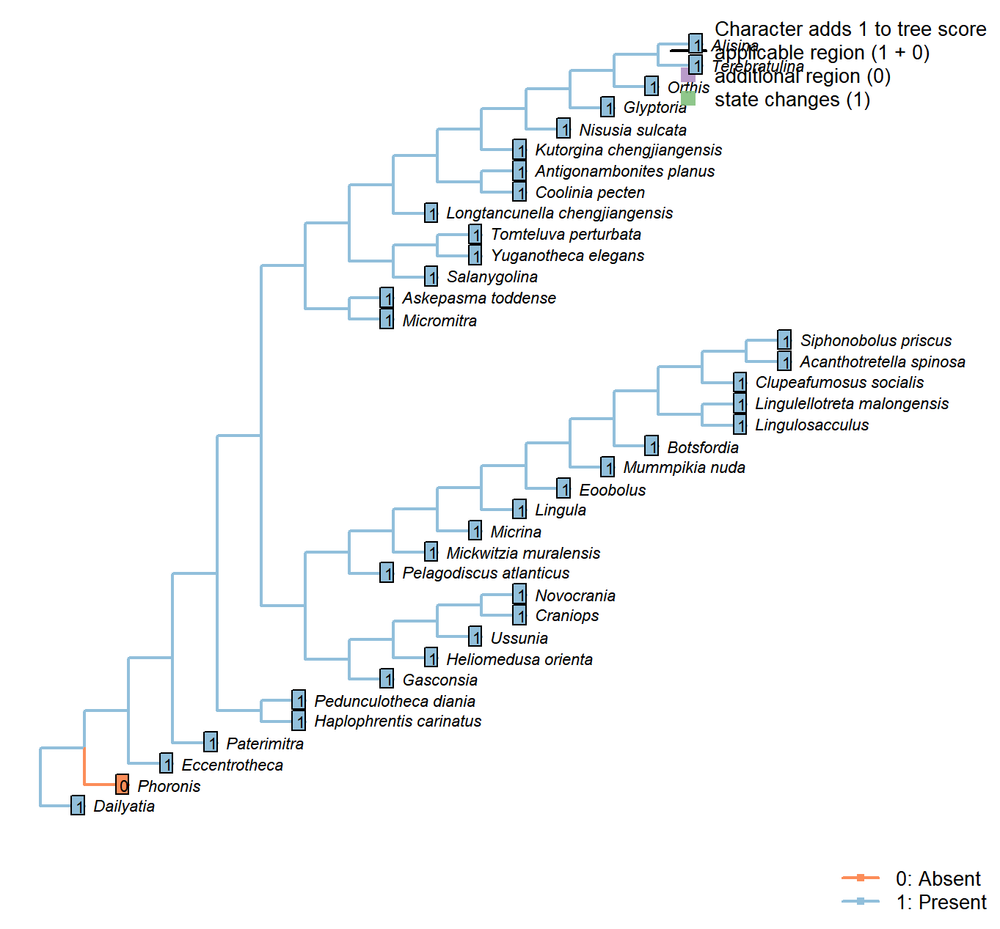
Character 1: Sclerites: Present in adult
0: Absent
1: Present
Neomorphic character.
Plate-like (wider than tall) skeletal elements, whether mineralized or non-mineralized.
The definition deliberately excludes setae (which are taller than wide).
[2] Disposition
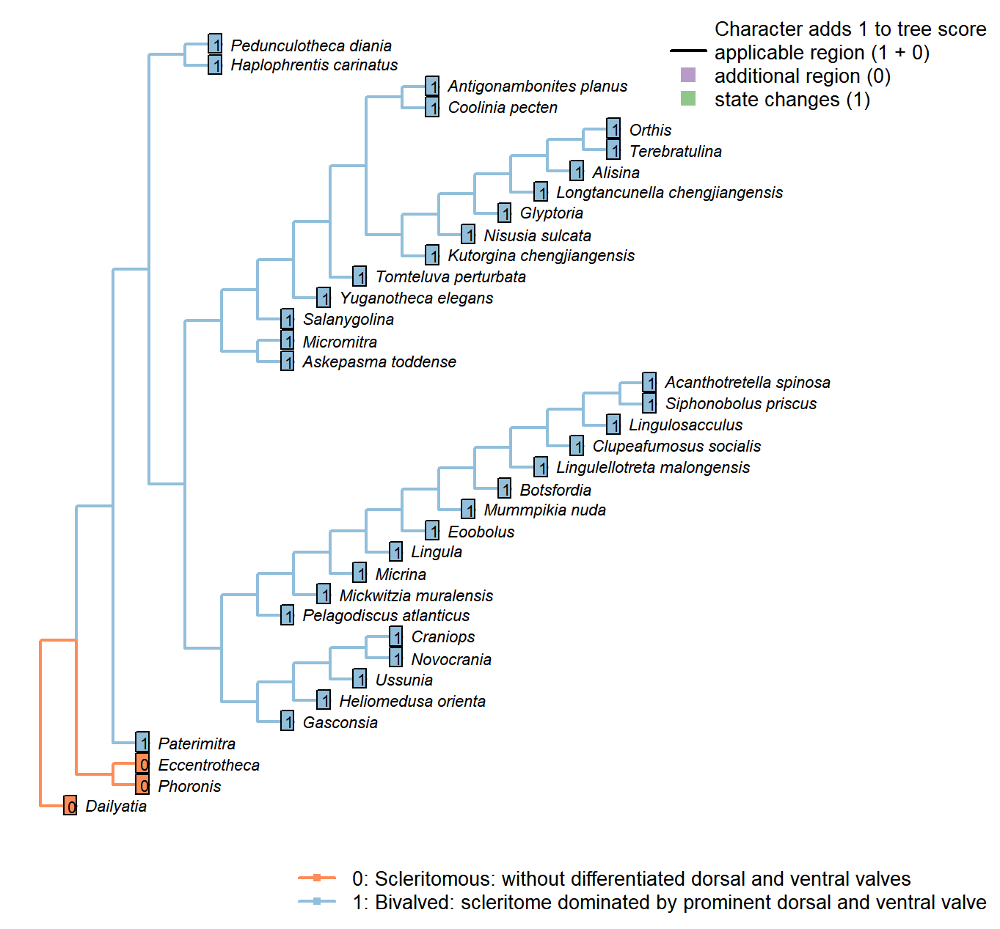
Character 2: Sclerites: Disposition
1: Single skeletal element
2: Bivalved: scleritome dominated by prominent dorsal and ventral valve
3: Multiple skeletal elements with no differentiated pair
Transformational character.
Taxa in the bivalved condition may bear small additional elements, such as the L-elements of Paterimitra or the stegidial / deltidial plates of certain brachiopods.
[3] Hinge line shape
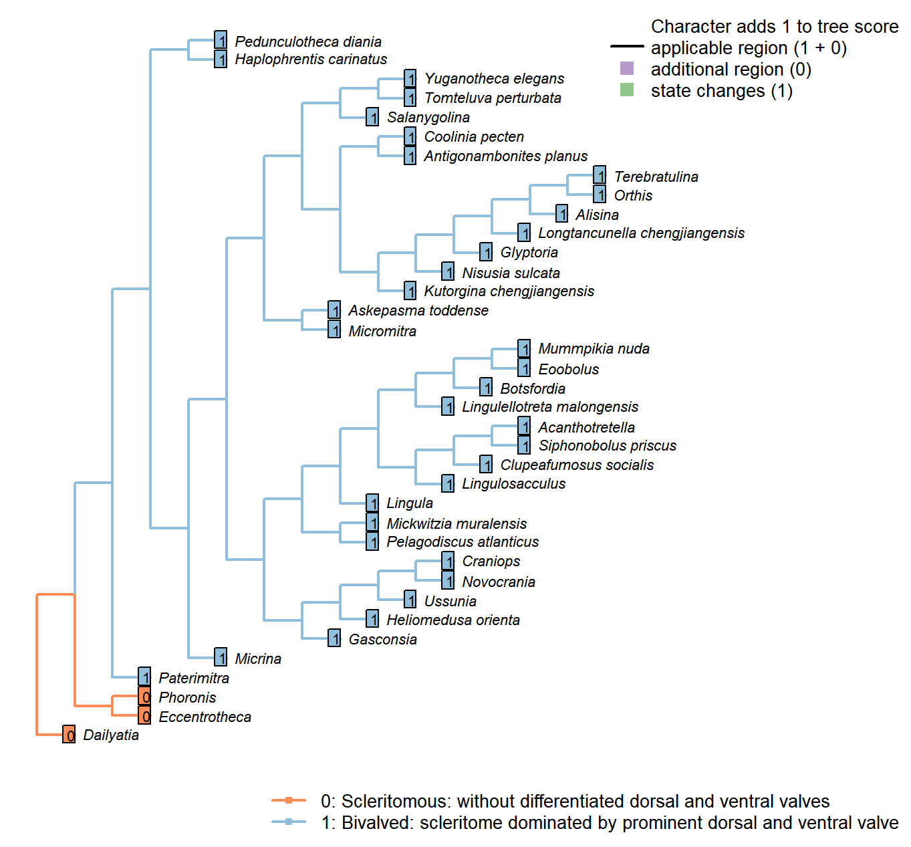
Character 3: Sclerites: Bivalved: Hinge line shape
1: Astrophic
2: Strophic
Transformational character.
[4] Apophyses
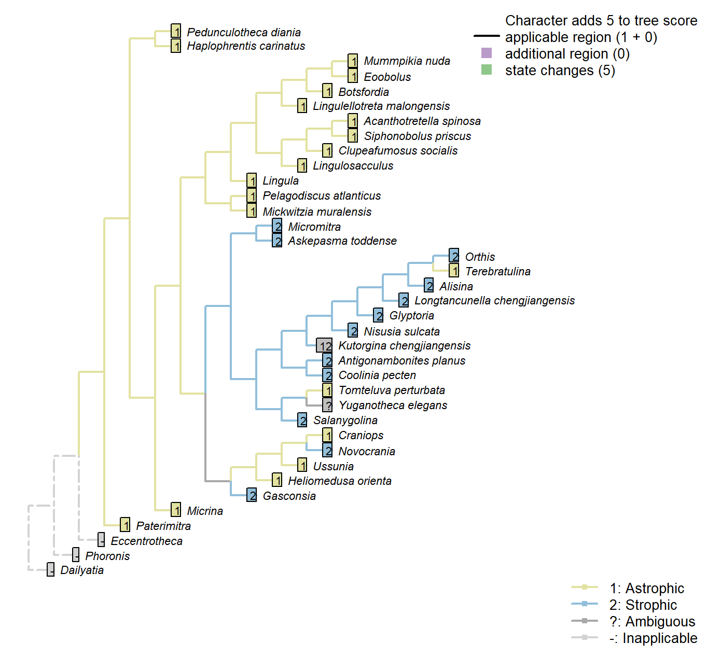
Character 4: Sclerites: Bivalved: Apophyses
0: Absent
1: Present
Neomorphic character.
Many brachiopods, in addition to Micrina and others, bear tooth-like structures or processes that articulate the two primary valves.
Caution must be applied before taxa are coded as “absent”, as teeth can be subtle and may be overlooked.
Kutorginata don’t have teeth or dental sockets, but their shells are articulated by “two triangular plates formed by dorsal interarea, bearing oblique ridges on the inner sides” (Williams et al. 2000211); this simple hinge mechanism is different from other rhynchonelliforms (Williams et al. 2000208), but serves an equivalent purpose and is thus potentially homologous. We thus code kutorginids as present, using a subsequent character to capture difference in tooth morphology.
[5] Apophyses: Morphology
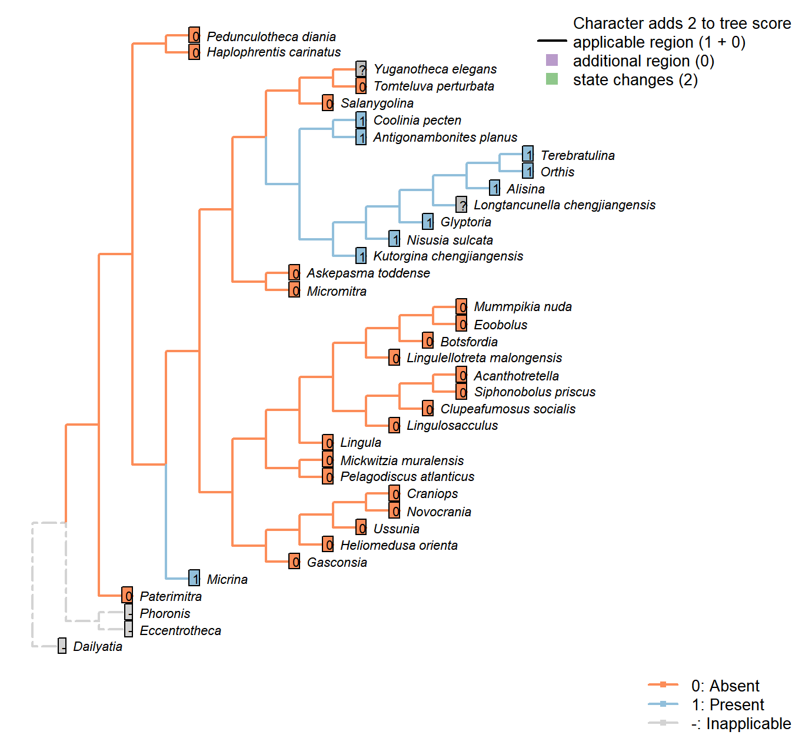
Character 5: Sclerites: Bivalved: Apophyses: Morphology
1: Deltidiodont
2: Cyrtomatodont
3: Pseudodont
Transformational character.
Deltidiodont teeth are simple hinge teeth developed by the distal accretion of secondary shell; Cyrtomatodont teeth are knoblike or hook-shaped hinge teeth developed by differential secretion and resorption of the secondary shell (fig. 322 in Williams et al. 2000).
Kutorginata (here represented by Kutorgina and Nisusia) don’t have teeth (apophyses) or dental sockets, but their shells are articulated by “two triangular plates formed by dorsal interarea, bearing oblique ridges on the inner sides” (Williams et al. 2000211); this simple hinge mechanism is different from other rhynchonelliforms [Williams et al. (2000), p.208; table 13 character 30], and is described as a “pseudodont articulation” (Holmer et al. 2018b).
pseudodeltidium fitting into the ‘sockets’ on the inner side of the dorsal interarea (Holmer et al. 2018b). [Coded as “deltidiodont teeth absent” in Benedetto (2009).].
[6] Apophyses: Dental plates
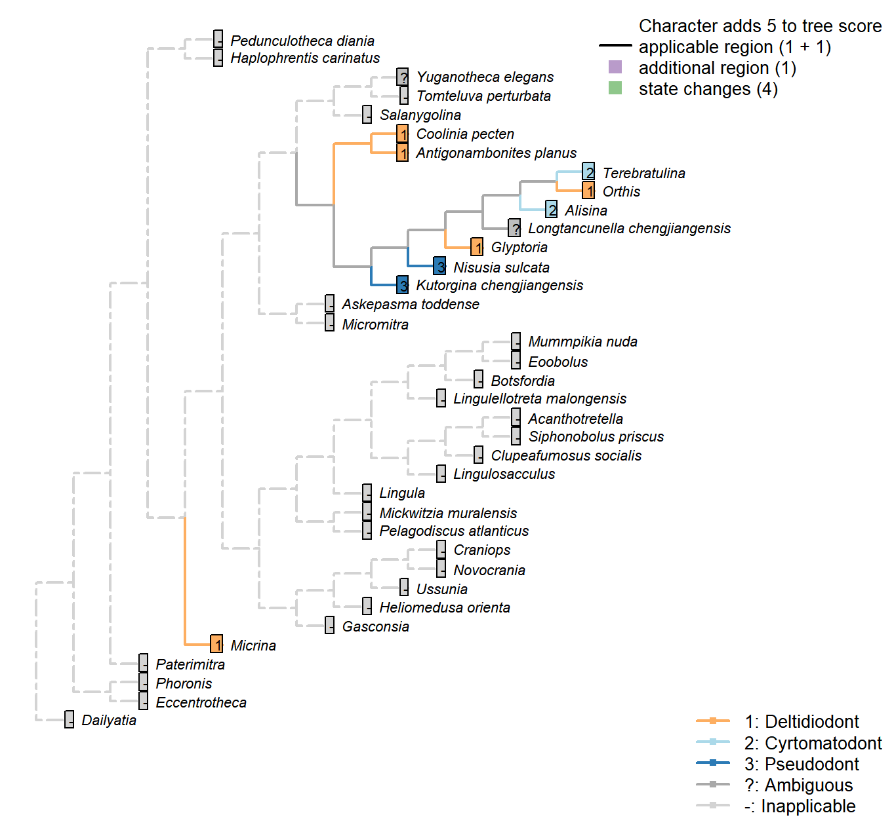
Character 6: Sclerites: Bivalved: Apophyses: Dental plates
0: Absent
1: Present
Neomorphic character.
Williams et al. (1997) (p362) write: “Teeth […] are commonly supported by a pair of variably disposed plates also built up exclusively of secondary shell and known as dental plates (Fig. 323.1, 323.3).”
Dewing (2001) elaborates: “Dental plates are near-vertical, narrow sheets of shell tissue between the anteromedian edge of the teeth and floor of the ventral valve. They are a composite structure, resulting from the growth of teeth over the ridge that bounds the ventral-valve muscle field.”
Williams et al. (2000) (p.201) write: “The denticles lack supporting structures in all Obolellida, but in Naukatida they are supported by an arcuate plate below the
interarea, the anterise (Fig. 119.3a)”.
The anterise is conceivably homologous with the dental plates, thus the presence of either is coded “present” for this character.
[7] Sockets
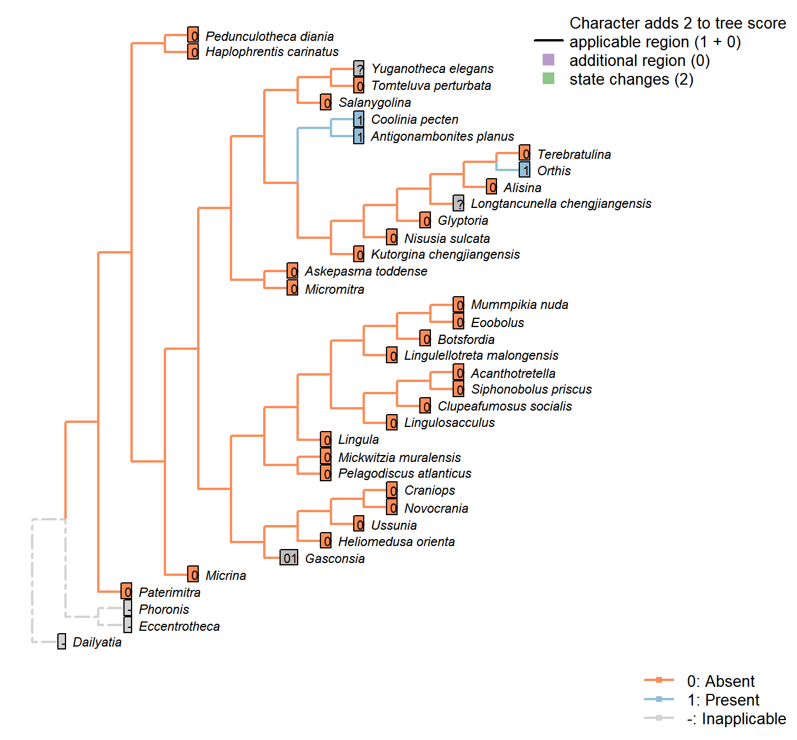
Character 7: Sclerites: Bivalved: Sockets
0: Absent
1: Present
Neomorphic character.
Simplified from Bassett et al. (2001) character 16.
This character is independent of apophyses, as several taxa bear sockets without corresponding teeth; the function of these sockets is unknown.
See figs 323ff in Williams et al. (1997).
[8] Socket ridges
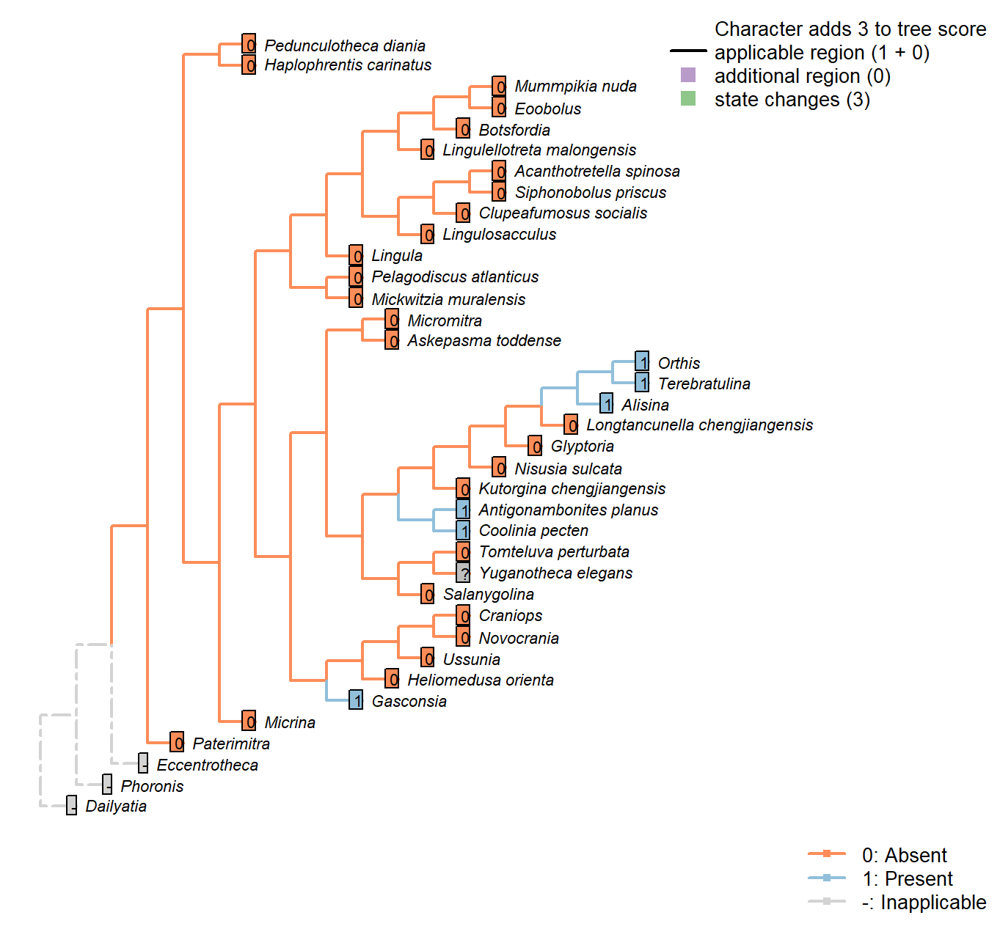
Character 8: Sclerites: Bivalved: Socket ridges
0: Absent
1: Present
Neomorphic character.
After Bassett et al. (2001) character 17. May be difficult to distinguish from a brachiophore (see Fig 323 in Williams et al. 1997), so the two structures are not distinguished here.
[9] Enclosing filtration chamber
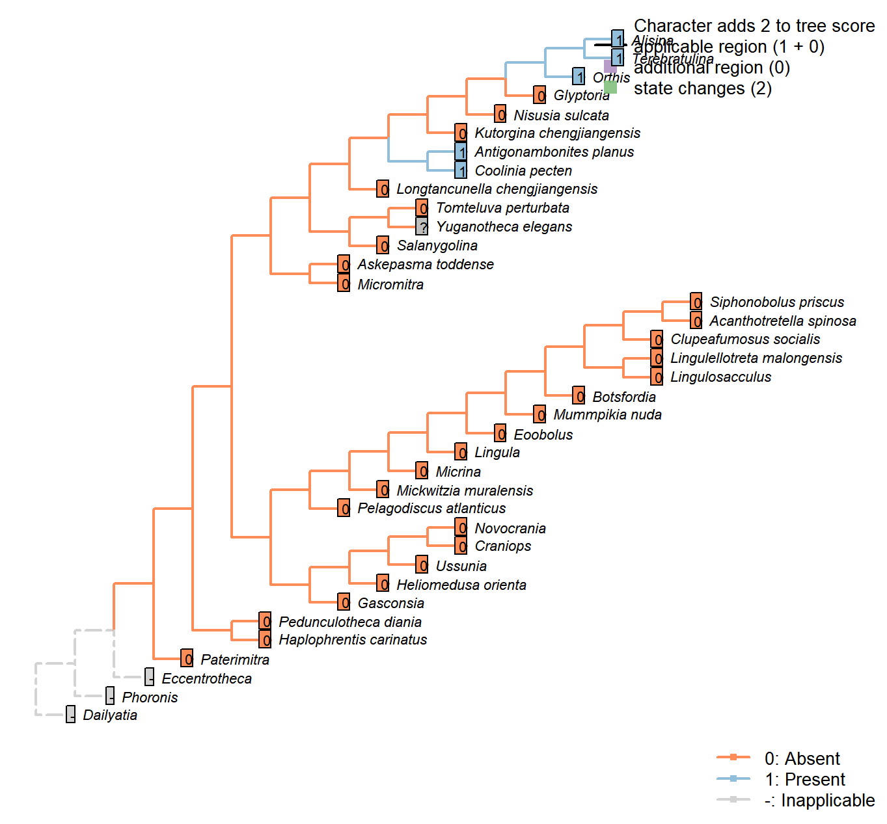
Character 9: Sclerites: Bivalved: Enclosing filtration chamber
0: No filtration chamber, or open chamber
1: Shells close to form enclosed filtration chamber
Neomorphic character.
In crown-group brachiopods, the two primary shells close to form an enclosed filtration chamber. Further down the stem, taxa such as Micrina do not.
[10] Commissure
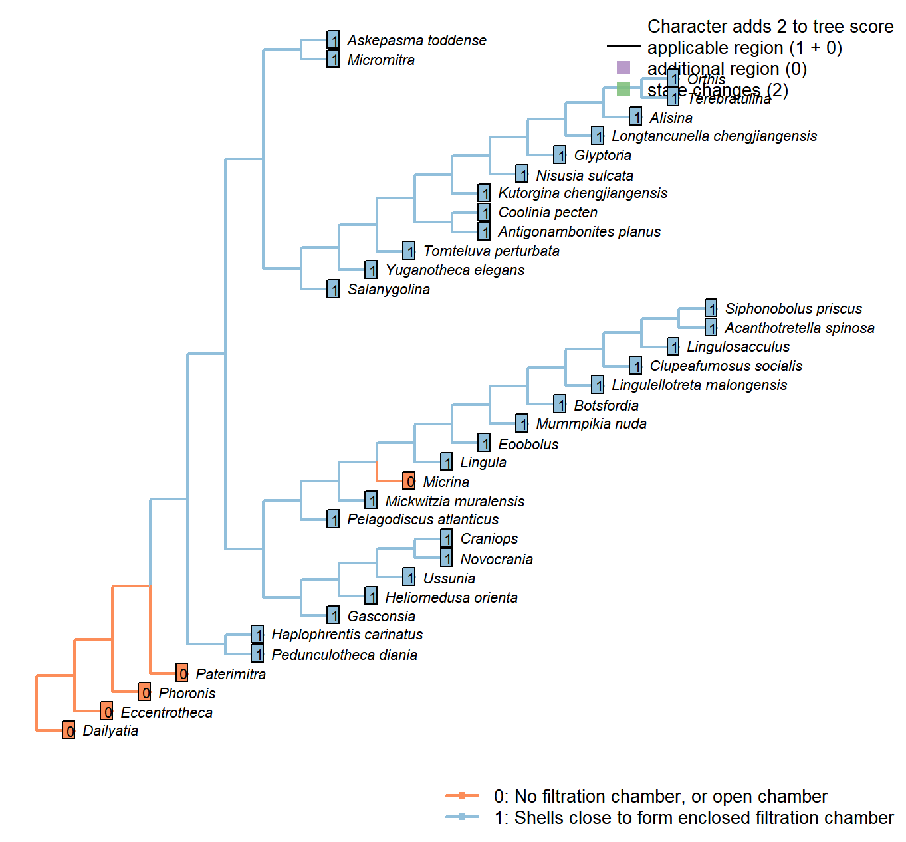
Character 10: Sclerites: Bivalved: Commissure
1: Rectimarginate
2: Uniplicate
3: Sulcate
Transformational character.
The anterior commissure can be rectimarginate (i.e. straight), uniplicate (i.e. median sulcus in ventral valve), or sulcate (with median sulcus in dorsal valve).
[11] Muscle scars: Ventral
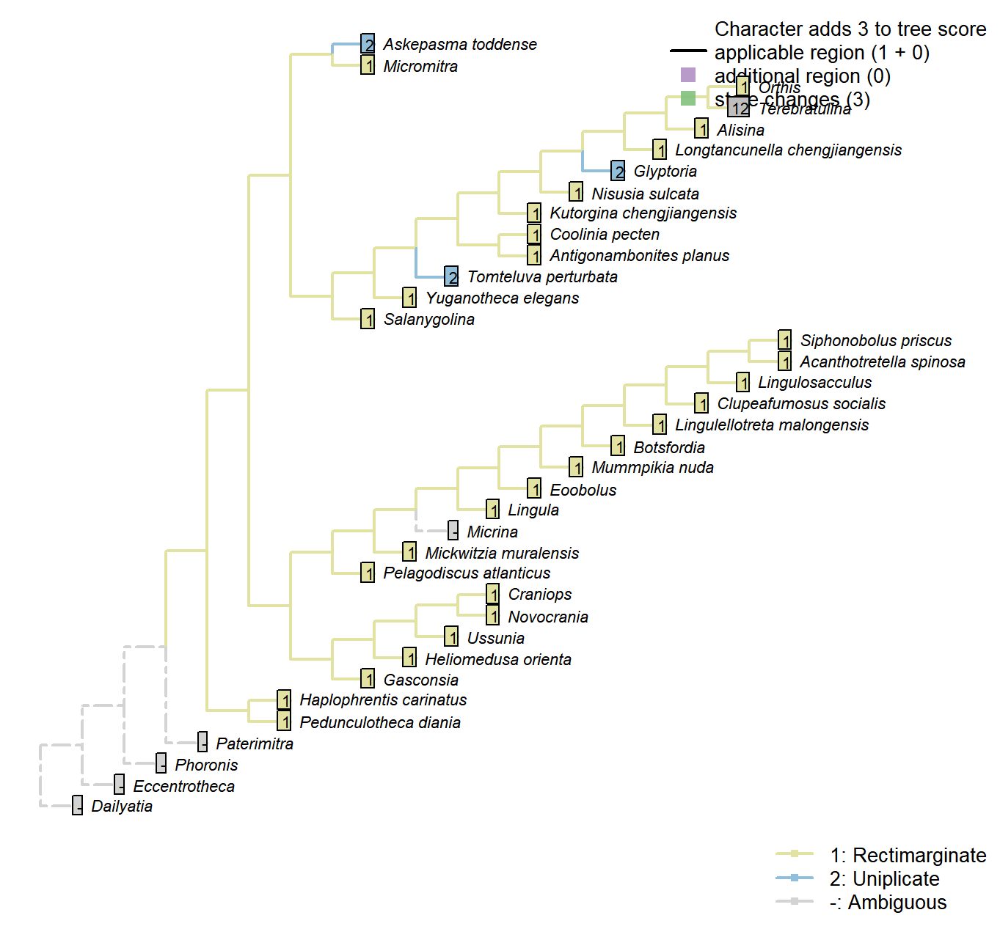
Character 11: Sclerites: Bivalved: Muscle scars: Ventral
0: Absent
1: Present
Neomorphic character.
After Bassett et al. (2001) character 6.
[12] Muscle scars: Ventral: Position
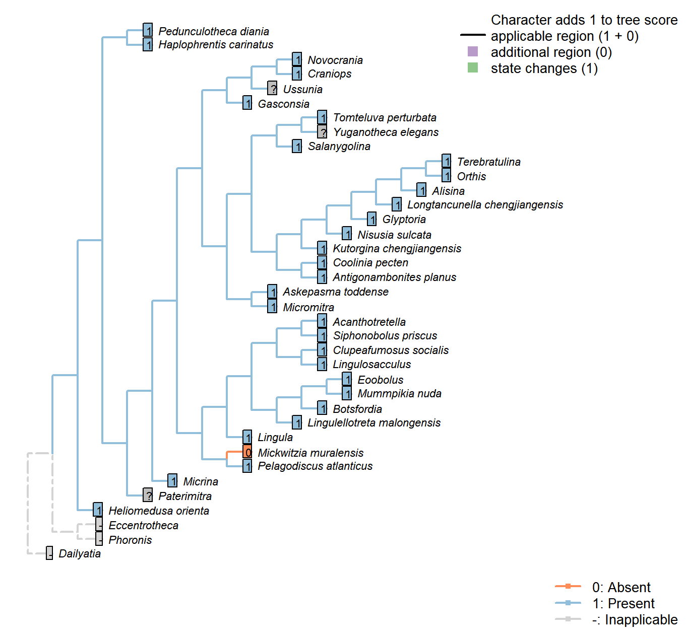
Character 12: Sclerites: Bivalved: Muscle scars: Ventral: Position
1: Posterolateral and medial attachments
2: Medial attachments only
Transformational character.
Muscles can attach to the ventral valve posterolaterally to, as well as between, the vascula lateralia (Popov 1992).
[13] Muscle scars: Adjustor
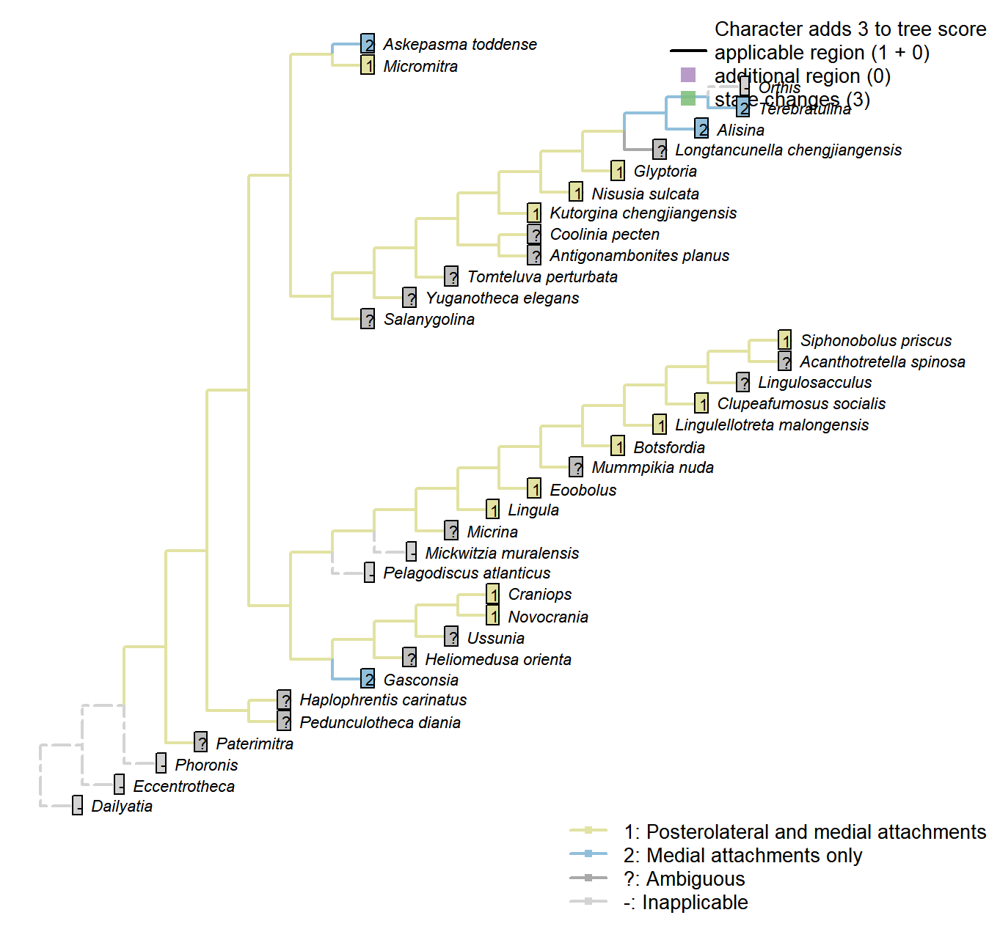
Character 13: Sclerites: Bivalved: Muscle scars: Adjustor
0: Absent
1: Present
Neomorphic character.
After Bassett et al. (2001) character 7.
This character is contingent on the presence of a pedicle. Extreme caution must be used in inferring an absent state, as adjustor scars can be extremely difficult to distinguish from the adductor scars.
[14] Muscle scars: Dorsal adductor
Character 14: Sclerites: Bivalved: Muscle scars: Dorsal adductor
1: Dispersed
2: Radially arranged
3: Quadripartite
Transformational character.
After Bassett et al. (2001) character 8, and Williams et al. [(1996), character 35; 2000, p. 160, character 54]
In the dorsal valve, the anterior and posterior adductor scars of articulated brachiopods form a single (quadripartite) muscle field (Williams et al. 2000201)
In contrast, the anterior and posterior scars of e.g. trimerellids have prominently separate attachment points, with anterior and posterior muscle fields clearly distinct, and coded as “dispersed”.
In e.g. kutorginates, adductor muscles are separated into left and right fields; the same is the case in lingulids, where there are more separate muscle groups and the left and right fields conspire to produce a radial arrangement; both of these configurations are scored as “radially arranged”.
Glyptoria: Scored as “dispersed” by Williams et al. (1998) … but then so is Kutorgina, which Bassett et al. (2001) score as radial.
Williams et al. (2000) state, for superfamily Protorthida, “dorsal adductor scars probably linear”, which fits in the category of “radial” employed herein – so that’s what we follow.[15] Muscle scars: Adductors: Position

Character 15: Sclerites: Bivalved: Muscle scars: Adductors: Position
1: Oblique
2: At high angle
Transformational character.
Position of adductor muscles relative to commissural plane.
After Bassett et al. (2001) character 11.
[16] Muscle scars: Dermal muscles
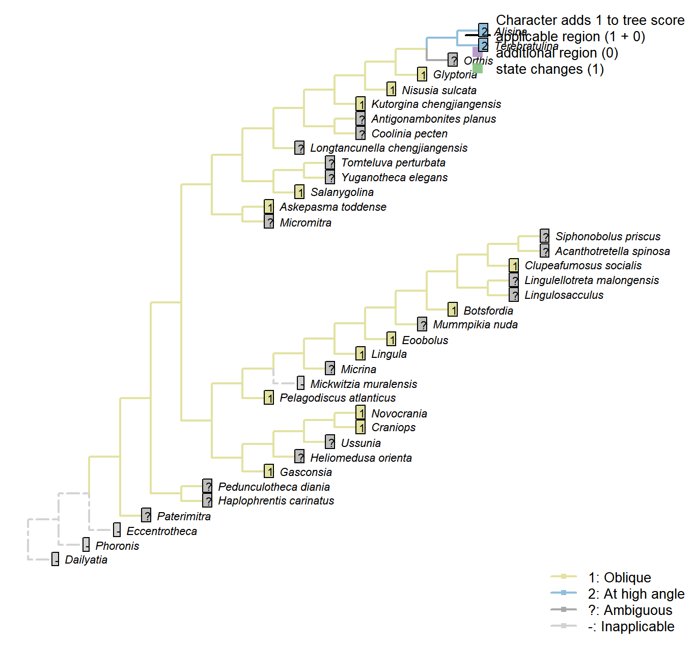
Character 16: Sclerites: Bivalved: Muscle scars: Dermal muscles
0: Absent or weakly developed
1: Strongly developed
Neomorphic character.
Based on character 11 in Zhang et al. (2014).
Well developed dermal muscles present in the body wall of recent lingulates, which are absent in all calcareous-shelled brachiopods. These muscles are responsible for the hydraulic shell-opening mechanism, and possibly present in all organophosphatic-shelled brachiopods, with the possible exception of the paterinates (Williams et al., 2000, p. 32).
[17] Muscle scars: Unpaired median (levator ani)
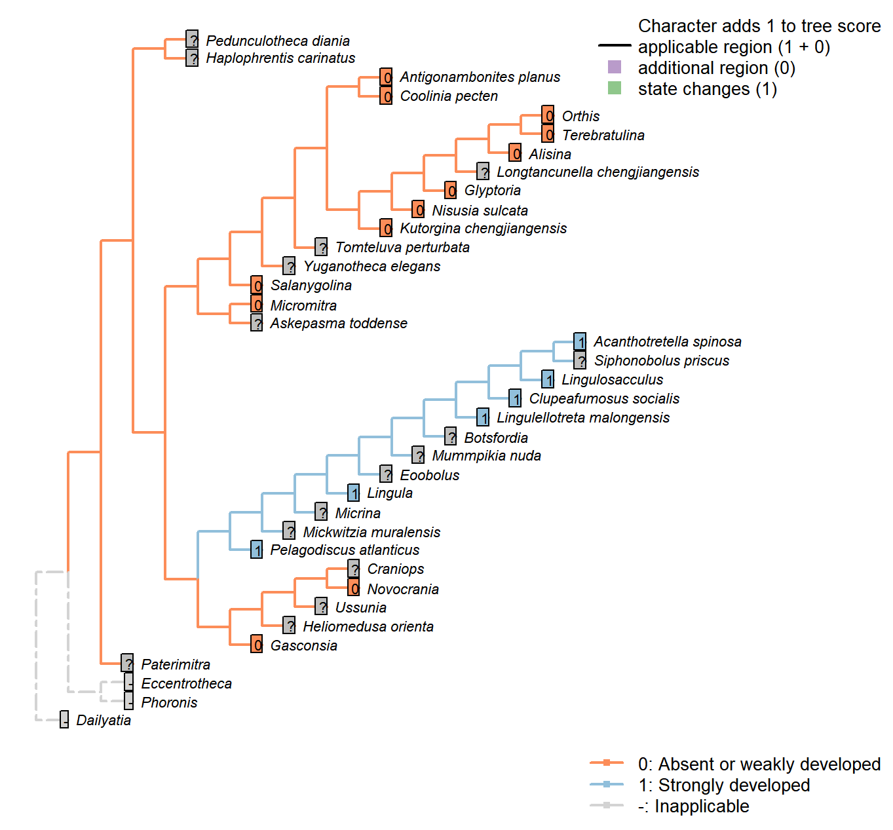
Character 17: Sclerites: Bivalved: Muscle scars: Unpaired median (levator ani)
0: Absent
1: Present
Neomorphic character.
The levator ani is a diminutive unpaired medial muscle found in certain calcitic brachiopods [Williams et al. (2000); see fig. 89, character 34 in table 13].
[18] Muscle scars: Dorsal diductor
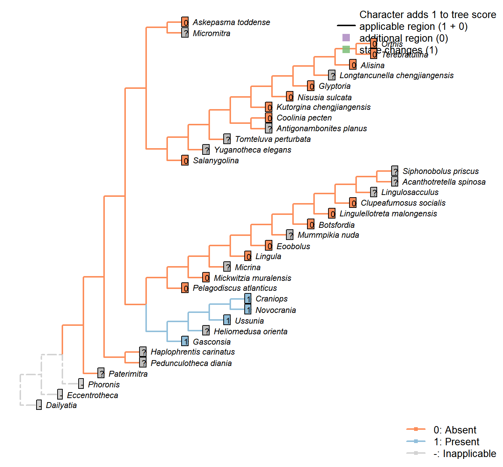
Character 18: Sclerites: Bivalved: Muscle scars: Dorsal diductor
0: Absent
1: Present
Neomorphic character.
After Bassett et al. (2001) character 9.
[19] Muscle scars: Dorsal diductor: Position
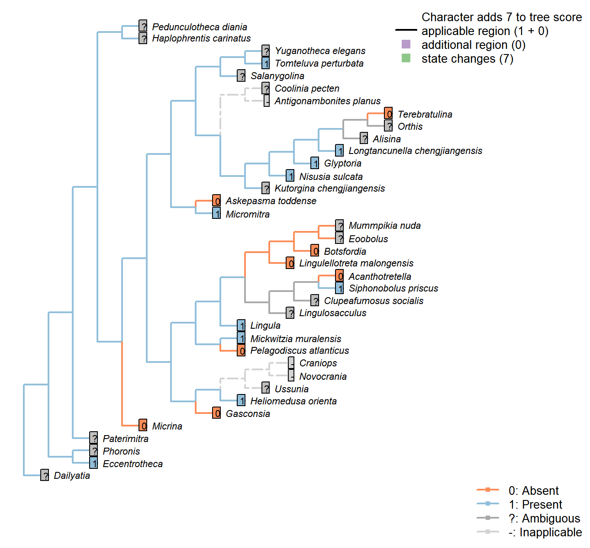
Character 19: Sclerites: Bivalved: Muscle scars: Dorsal diductor: Position
1: Close to commissural plane
2: Oblique to commissural plane
3: At high angle to commissural plane
Transformational character.
After Bassett et al. (2001) character 10.
3.2 Sclerites: Dorsal valve
[20] Growth direction
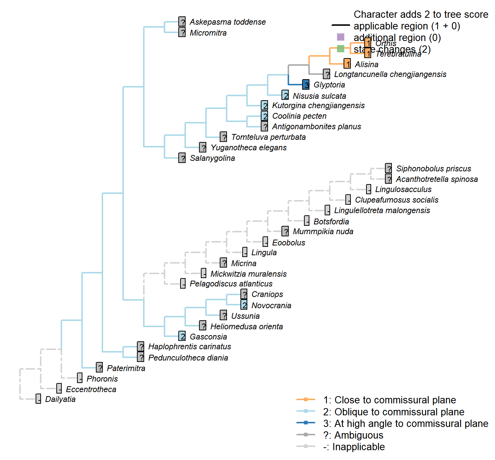
Character 20: Sclerites: Dorsal valve: Growth direction
1: Holoperipheral
2: Mixoperipheral
3: Hemiperipheral
Transformational character.
See Fig. 284 in Williams et al. (1997).
The growth direction dictates the attitude of the cardinal area relative to the hinge, which does not therefore represent an independent character.
Crudely put, if, viewed from a dorsal position, the umbo falls within the outer margin of the shell, growth is holoperipheral; if it falls outside the margin, it is mixoperipheral; if it falls exactly on the margin, it is hemiperipheral.
Heliomedusa orienta: “holoperipheral growth in dorsal valve” – Williams et al. (2007).
The insinuation from Zhang et al. (2009) is that Chen et al. (2007) misidentify the dorsal valve as the ventral valve.[21] Posterior surface: Differentiated
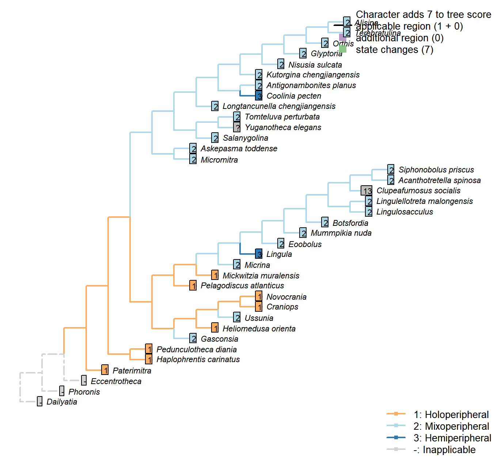
Character 21: Sclerites: Dorsal valve: Posterior surface: Differentiated
0: Posterior shell not differentiated
1: Posterior shell forms distinct cardinal area or pseudointerarea
Neomorphic character.
In shells that grow by mixoperipheral growth, the triangular area subtended between each apex and the posterior ends of the lateral margins is termed the cardinal area. In shells with holoperipheral growth, a flattened surface on the posterior margin of the valve is termed a pseudointerarea (paraphrasing Williams et al. 1997).
In order for this character to be independent of a shell’s growth direction, we do not distinguish between a “cardinal area”, “interarea” or “pseudointerarea”.
interarea is recognisable; whether or not this is the primary state or a taphonomic artefact is difficult to assess” – Balthasar (2008), p. 276.
[22] Differentiated posterior surface: Morphology
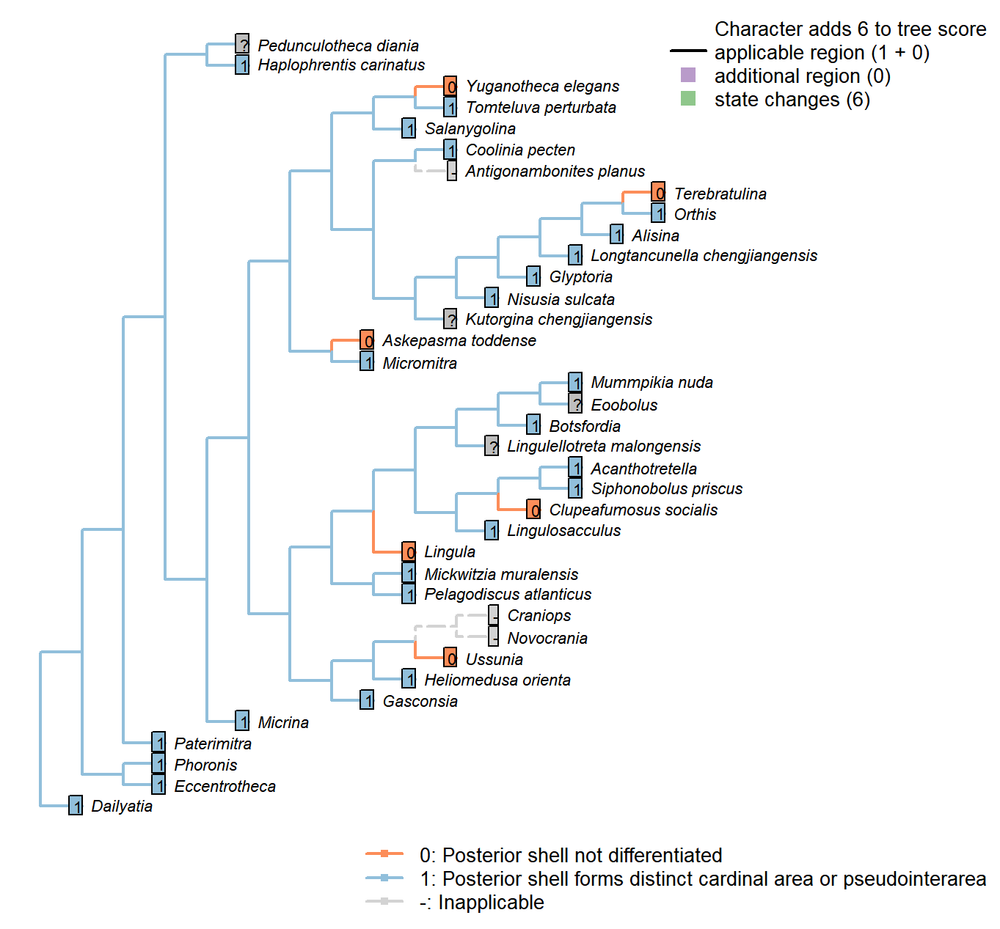
Character 22: Sclerites: Dorsal valve: Differentiated posterior surface: Morphology
0: Curved lateral profile
1: Planar lateral profile
Neomorphic character.
It is possible for a cardinal area or pseudointerarea to be distinct from the anterior part of the shell, yet to remain curved in lateral profile.
Taking an undifferentiated posterior margin as primitive, the primitive condition is curved – flattening of the posterior margin represents an additional modification that can only occur once the posterior margin is differentiated.
[23] Posterior surface: Medial groove
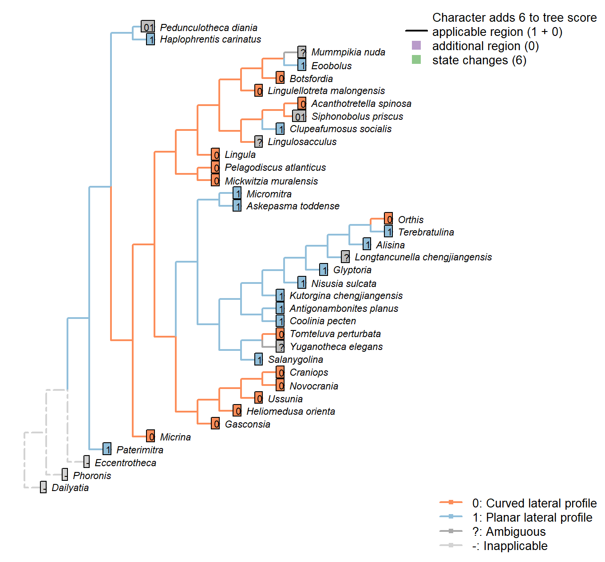
Character 23: Sclerites: Dorsal valve: Posterior surface: Medial groove
0: Absent
1: Present
Neomorphic character.
Following character 29 in Williams et al. (2000), table 9 (which relates to pseudointerarea).
[24] Posterior surface: Notothyrium
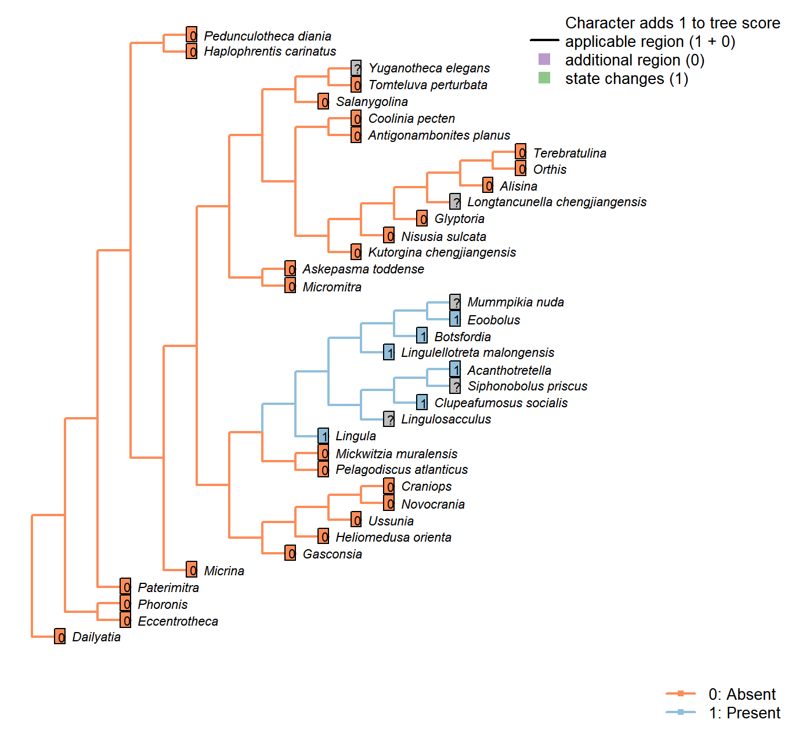
Character 24: Sclerites: Dorsal valve: Posterior surface: Notothyrium
0: Absent
1: Present
Neomorphic character.
A notothyrium is an opening in an interarea that accommodates the pedicle, and may be filled with plates.
[25] Posterior surface: Notothyrium: Shape
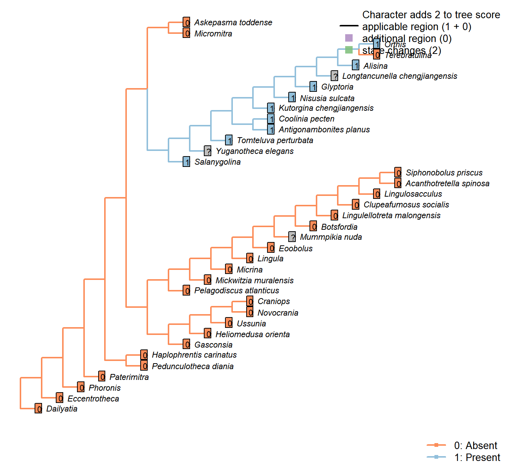
Character 25: Sclerites: Dorsal valve: Posterior surface: Notothyrium: Shape
1: Parallel-sided cleft
2: Triangular
Transformational character.
A notothyrium is an opening in an interarea that accommodates the pedicle, and may be filled with plates.
A simplification of character 5 in Bassett et al. (2001).
[26] Posterior surface: Notothyrium: Chilidial plates
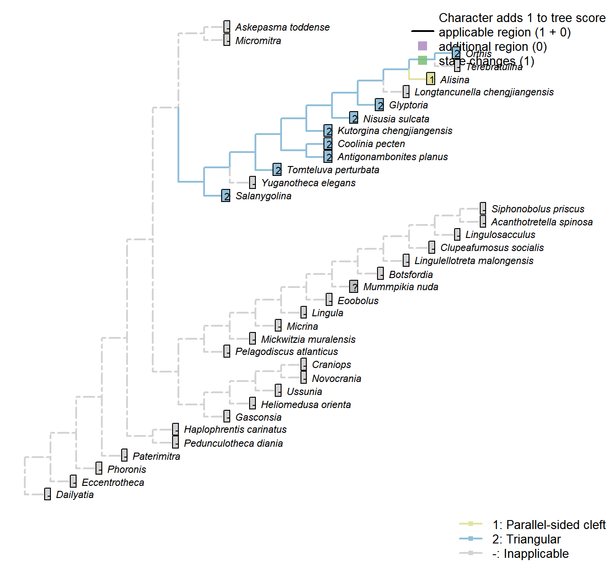
Character 26: Sclerites: Dorsal valve: Posterior surface: Notothyrium: Chilidial plates
1: Open
2: Covered by chilidial plates
Transformational character.
A notothyrium may be open or covered by a chilidium or two chilidial plates.
No included taxa exhibit more than one chilidial plate.
Transformational as it is not self-evident whether the ancestral taxon had an open or closed notothyrium.
[27] Notothyrial platform
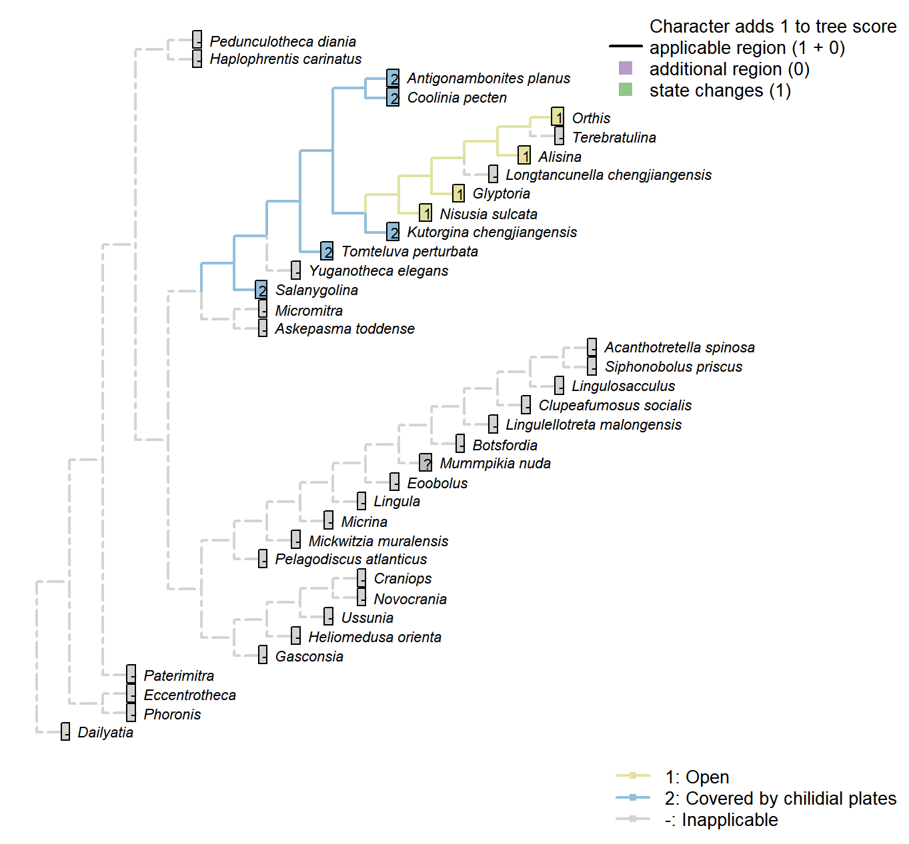
Character 27: Sclerites: Dorsal valve: Notothyrial platform
0: Absent
1: Present
Neomorphic character.
After Bassett et al. (2001) character 12.
The presence or absence of a notothyrial platform, which often serves as an attachment point for the diductors in a similar fashion to the cardinal processes, is independent of the presence of a notothyrium.
Bassett et al. (2001) score as absent in Table 18.1.
“Dorsal diductor scars impressed on floor of notothyrial cavity”: Williams et al. (2000), regarding Kutorginata.
[28] Cardinal processes
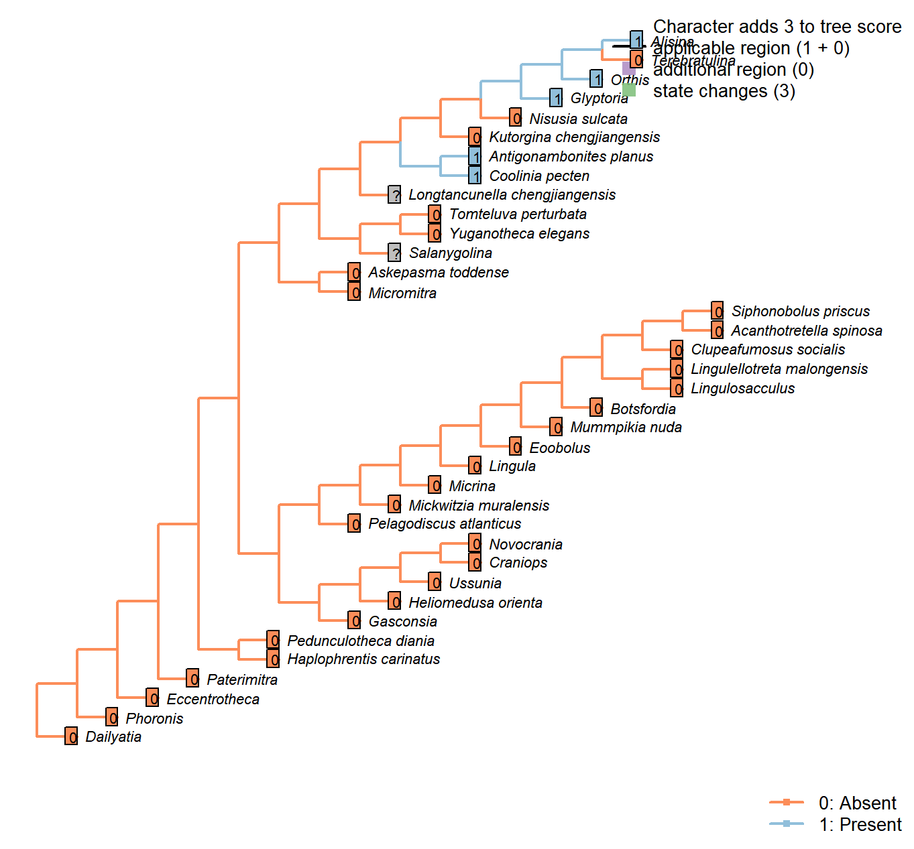
Character 28: Sclerites: Dorsal valve: Cardinal processes
0: Absent
1: Present
Neomorphic character.
After Bassett et al. (2001) character 13.
Cardinal processes are unlikely to be homologous with the notothyrial platform, even if their function is similar.
[29] Medial septum
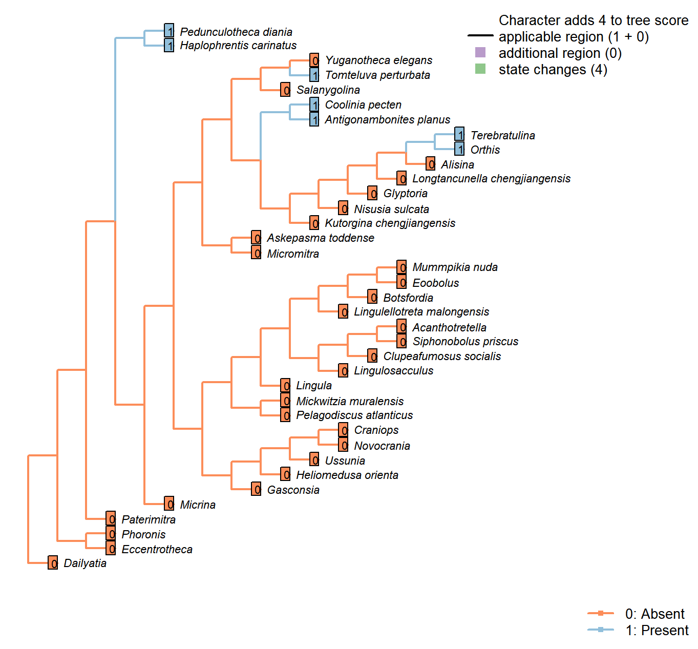
Character 29: Sclerites: Dorsal valve: Medial septum
0: Absent
1: Present
Neomorphic character.
The dorsal valve of many taxa is exhibits a septum or process (or myophragm) along the medial line. See character 25 in Benedetto (2009).
Heliomedusa orienta: Reported on ‘ventral’ valve by Chen et al. (2007); we consider their ‘ventral’ valve to be the dorsal valve.
The structure is unambiguously figured (e.g. fig. 5.1 in Chen et al. 2007), contra its coding as absent in Williams et al. (2000) and its lack of mention in Williams et al. (2007) or Zhang et al. (2009).3.3 Sclerites: Ventral valve
[30] Relative size
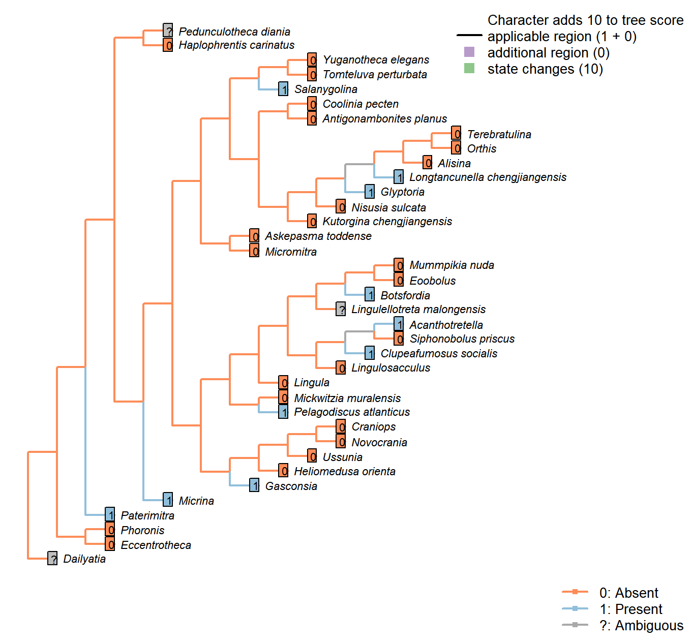
Character 30: Sclerites: Ventral valve: Relative size
1: Ventral valve markedly larger than dorsal valve (ventribiconvex)
2: Equivalve (subequally biconvex)
3: Dorsal valve markedly larger than ventral valve (dorsibiconvex)
Transformational character.
In many brachiopods, the valves are closely similar in size; in others, the ventral valve is markedly larger than the dorsal, on account of being more convex. Marginal cases are treated as ambiguous for the relevant states.
[31] Growth direction
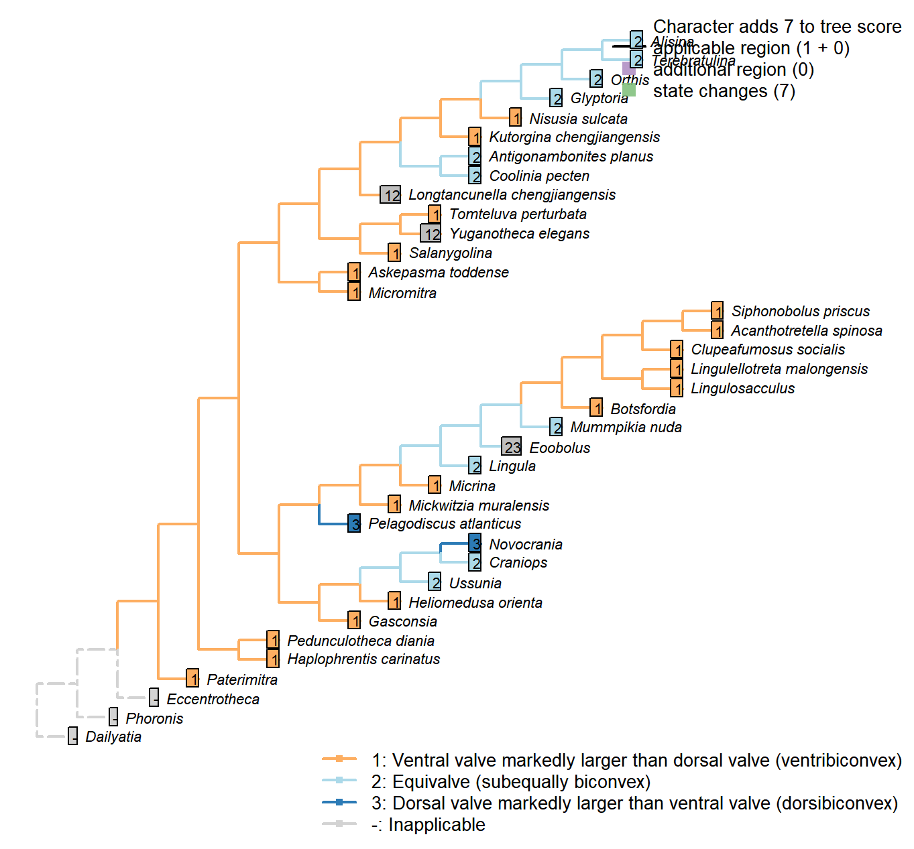
Character 31: Sclerites: Ventral valve: Growth direction
1: Holoperipheral
2: Mixoperipheral
3: Hemiperipheral
Transformational character.
See Fig. 284 in Williams et al. (1997) for depiction of terms.
The growth direction dictates the attitude of the cardinal area relative to the hinge, which does not therefore represent an independent character.
Crudely put, if, viewed from a dorsal position, the umbo falls within the outer margin of the shell, growth is holoperipheral; if it falls outside the margin, it is mixoperipheral; if it falls exactly on the margin, it is hemiperipheral.
[32] Posterior surface: Differentiated
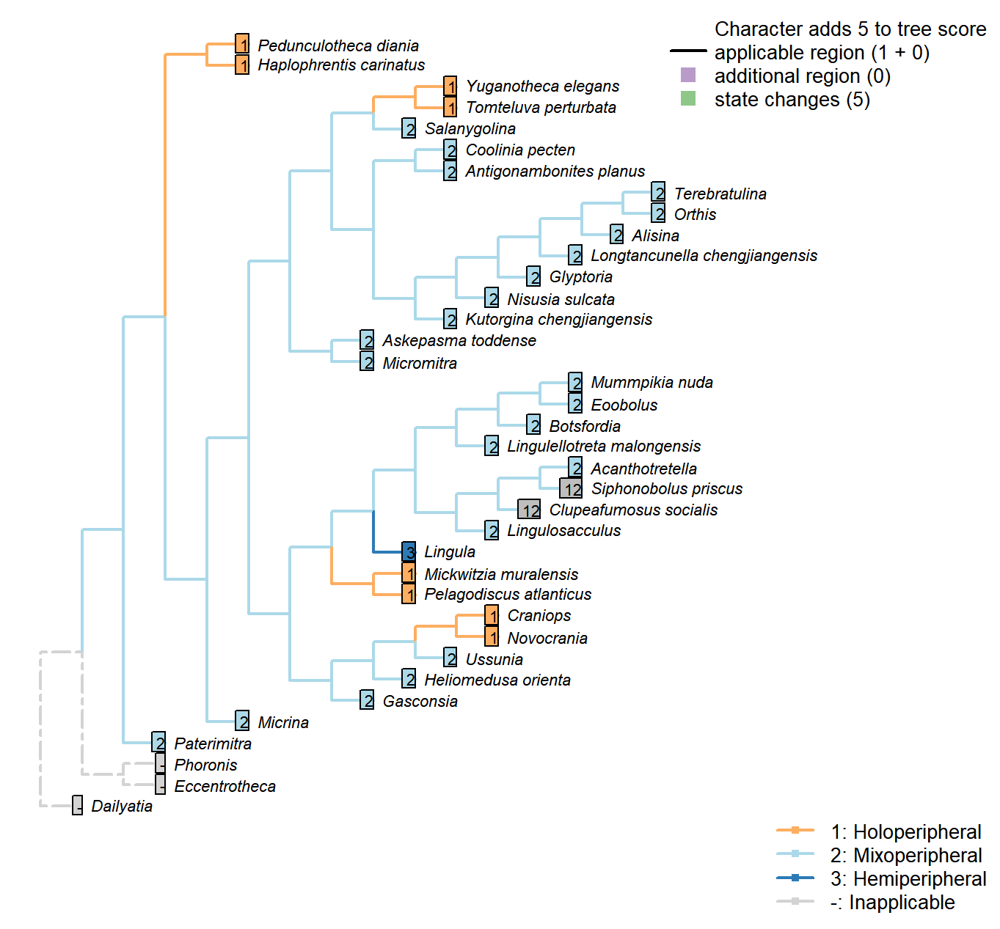
Character 32: Sclerites: Ventral valve: Posterior surface: Differentiated
0: Posterior surface of shell not differentiated
1: Posterior surface of shell forms distinct cardinal area or pseudointerarea
Neomorphic character.
In shells that grow by mixoperipheral growth, the triangular area subtended between each apex and the posterior ends of the lateral margins is termed the cardinal area. In shells with holoperipheral growth, a flattened surface on the posterior margin of the valve is termed a pseudointerarea (paraphrasing Williams et al. 1997).
In order for this character to be independent of a shell’s growth direction, we do not distinguish between a “cardinal area”, “interarea” or “pseudointerarea”.
[33] Posterior margin growth direction
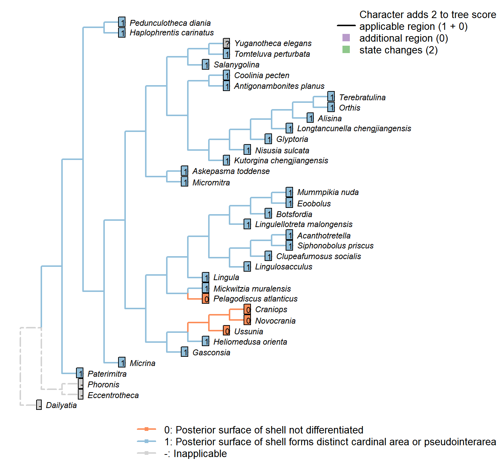
Character 33: Sclerites: Ventral valve: Posterior margin growth direction
1: Inward-growing
2: Outward-growing
Transformational character.
Balthasar (2008) notes an inward-growing posterior margin of the pseudointerarea as potentially linking Mummpikia with the linguliform brachiopods.
The posterior margin can only grow inwards if it is differentiated from the anterior margin; else the entire shell would grow in on itself.
[34] Posterior surface: Planar
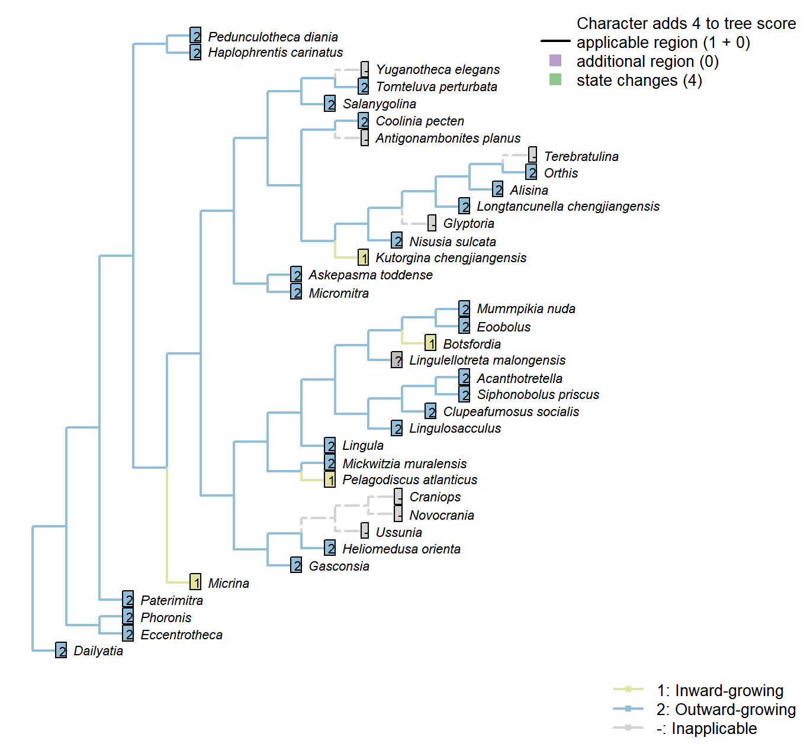
Character 34: Sclerites: Ventral valve: Posterior surface: Planar
0: Curved lateral profile
1: Planar lateral profile
Neomorphic character.
It is possible for a cardinal area or pseudointerarea to be distinct from the anterior part of the shell, yet to remain curved in lateral profile.
Taking an undifferentiated posterior margin as primitive, the primitive condition is curved – flattening of the posterior margin represents an additional modification that can only occur once the posterior margin is differentiated.
A flat and triangular interarea links Mummpikia with the Obolellidae (Balthasar 2008) – but all included taxa have triangular interareas, so this is not listed as a separate character.
(Topper et al. 2013a).
[35] Posterior surface: Extent
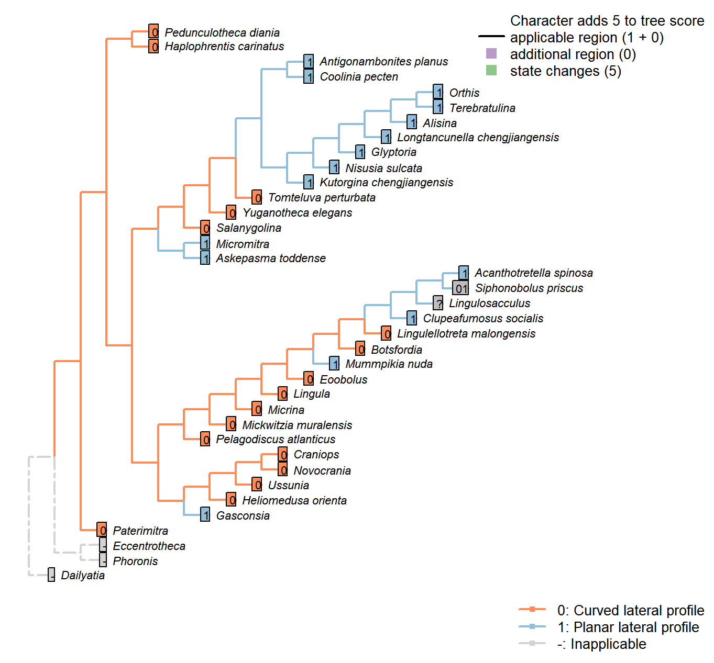
Character 35: Sclerites: Ventral valve: Posterior surface: Extent
1: Low
2: High
Transformational character.
Distinguishes taxa whose ventral valve is essentially flat from those that are essentially conical.
[36] Posterior surface: Delthyrium
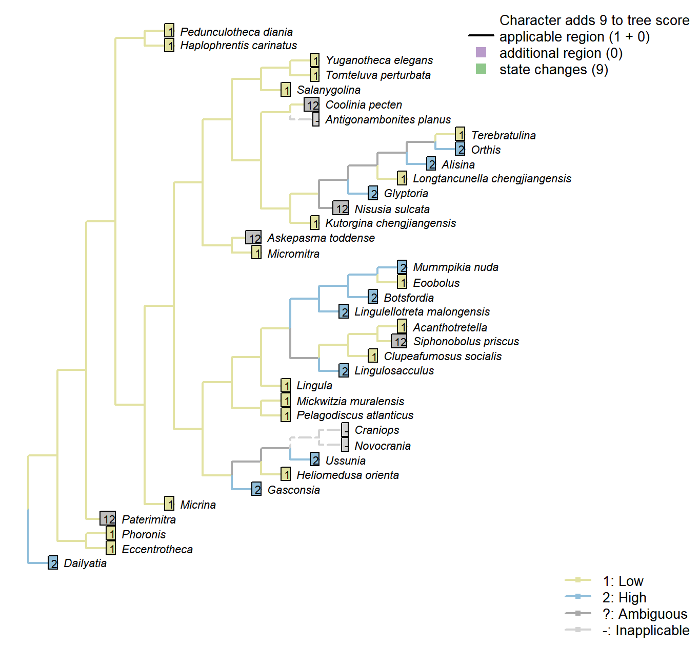
Character 36: Sclerites: Ventral valve: Posterior surface: Delthyrium
0: Absent
1: Present
Neomorphic character.
A delthyrium is an opening in an interarea or pseudointerarea that accommodates the pedicle, and may be filled with plates.
The homology of the pedicle in the pseudointerarea of obolellids and botsfordiids with the umbonal pedicle foramen of acrotretids was proposed by Popov (1992), and seemingly corroborated by observations of Ushatinskaya & Korovnikov (2016), who note that the propareas of the Botsfordia ventral valve sometimes merge to form an elongate teardrop-shaped pedicle foramen.
[37] Posterior surface: Delthyrium: Shape
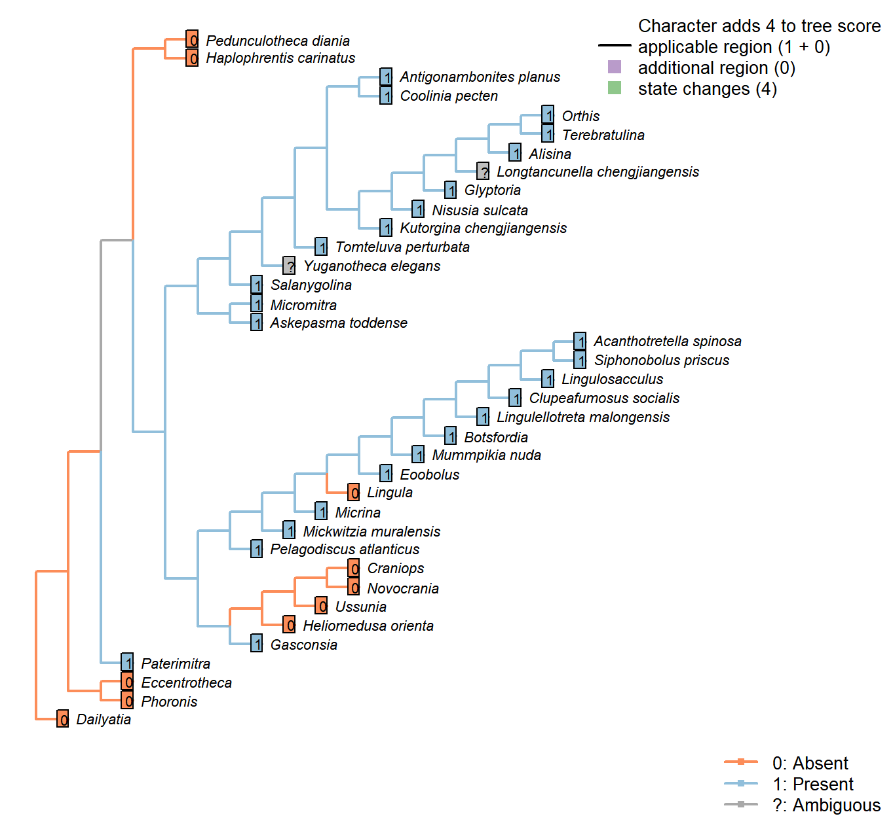
Character 37: Sclerites: Ventral valve: Posterior surface: Delthyrium: Shape
1: Parallel sided
2: Triangular
3: Round
Transformational character.
A parallel-sided delthyrium links Mummpikia with the Obolellidae (Balthasar 2008).
Following Popov (1992), the larval delthyrium of acrotretids and allied taxa is understood to be sealed in adults by outgrowths of the posterolateral margins of the shell. The resultant round or teardrop-shaped foramen corresponds the delthyrium.
[38] Posterior surface: Delthyrium: Shape: Aspect of rounded opening
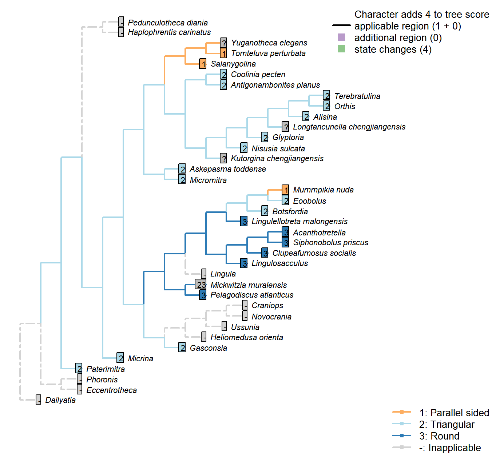
Character 38: Sclerites: Ventral valve: Posterior surface: Delthyrium: Shape: Aspect of rounded opening
1: Elongate: oval to rhombic
2: Essentially circular
3: Wider than long
Transformational character.
Chen et al. (2007) propose that an oval to rhombic foramen characterises the discinids [and Heliomedusa, though the foramen in this taxon has since been reinterpreted by Zhang et al. (2009) as an impression of internal tissue].
[39] Posterior surface: Delthyrium: Cover
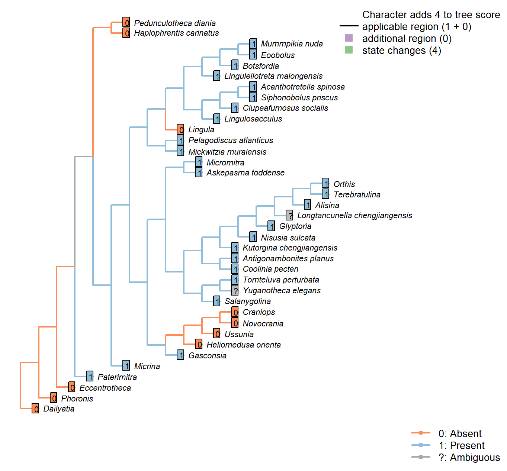
Character 39: Sclerites: Ventral valve: Posterior surface: Delthyrium: Cover
1: Open
2: Covered, at least in part
Transformational character.
An open delthyrium links Mummpikia with the Obolellidae (Balthasar 2008).
The delthyrial opening can be covered by one or more deltidial plates, or a pseudodeltitium.
Inapplicable in taxa with a round delthiruym (generated by overgrowth of the delthyrial opening by posterolateral parts of the shell, per Popov 1992).
[40] Posterior surface: Delthyrium: Cover: Extent
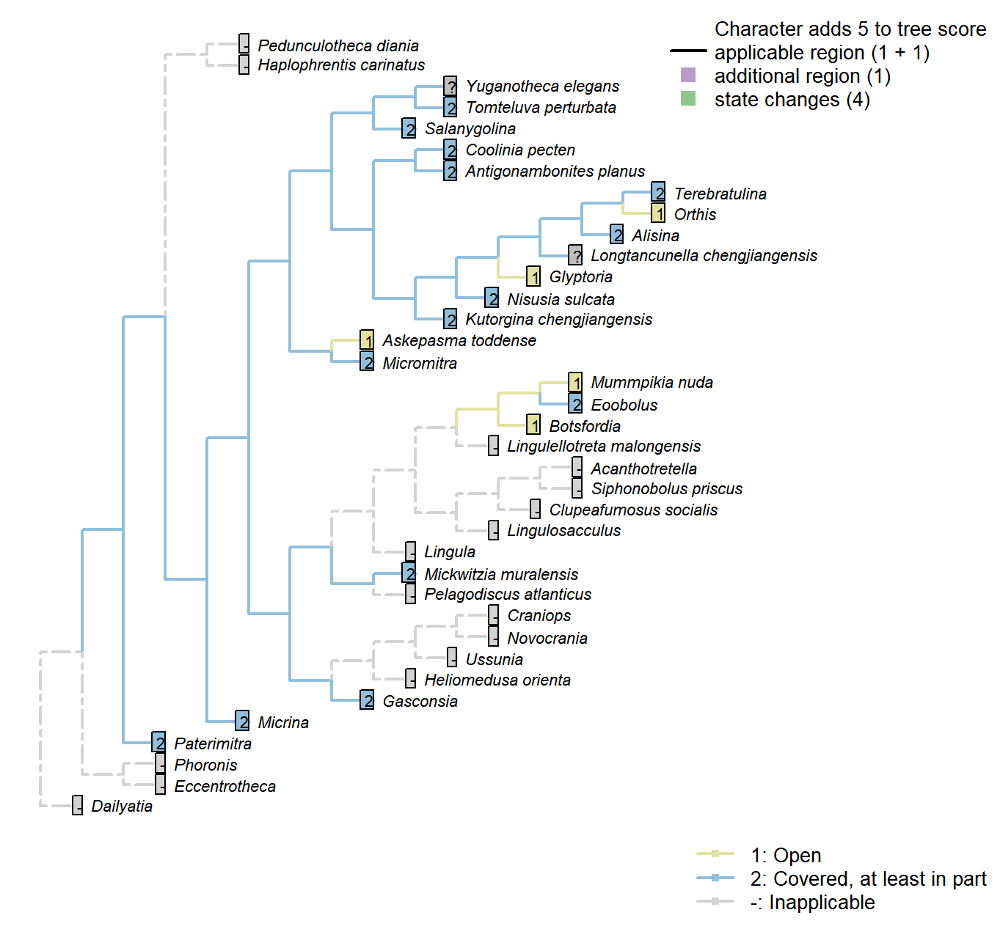
Character 40: Sclerites: Ventral valve: Posterior surface: Delthyrium: Cover: Extent
1: Covered only partially; partially open
2: Completely covered
Transformational character.
the delthyrium (Rowell and Caruso 1985).
[41] Posterior surface: Delthyrium: Cover: Identity
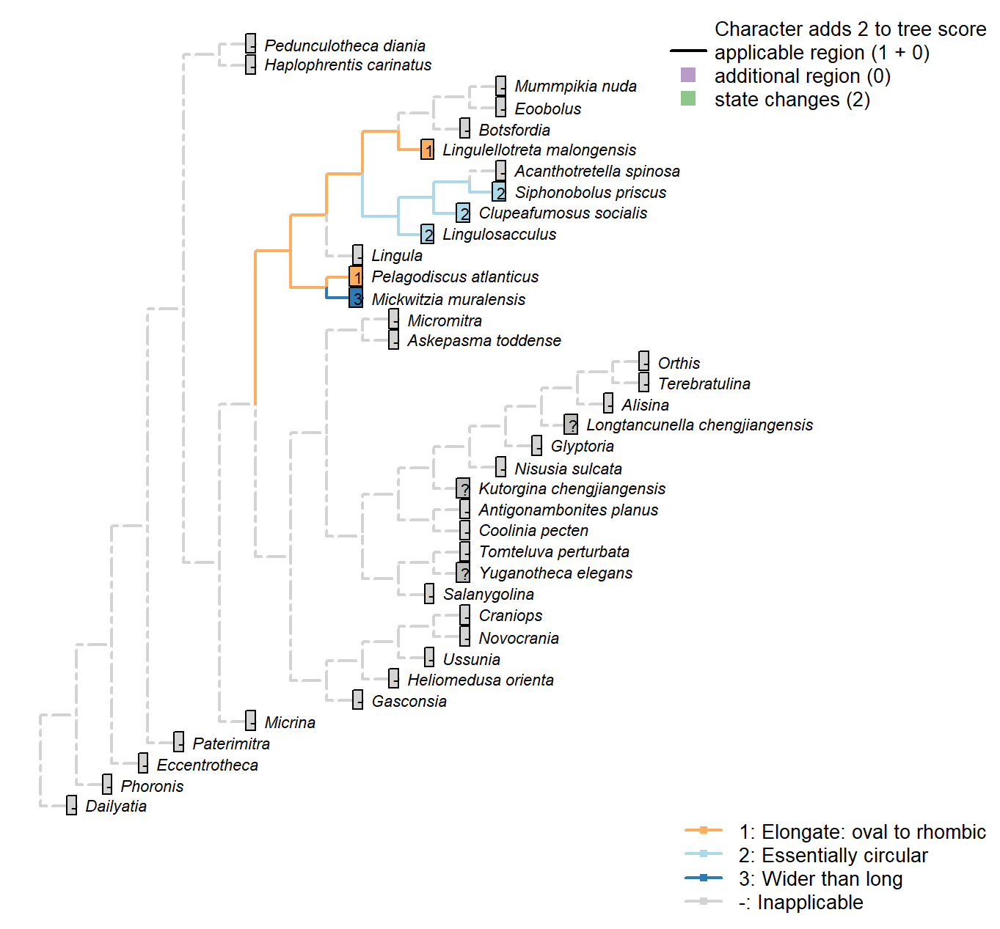
Character 41: Sclerites: Ventral valve: Posterior surface: Delthyrium: Cover: Identity
1: Pseudodeltidium
2: Deltidial plate(s)
Transformational character.
This character has the capacity for further resolution (one or more deltidial plates), but this is unlikely to affect the results of the present study.
The pseudodelthyrium is also referred to as a homeodeltidium.
Coded as “Pseudodeltidium: Covered by concave plate” by Bassett et al. (2001).
[42] Posterior surface: Delthyrium: Pseudodeltidium: Shape
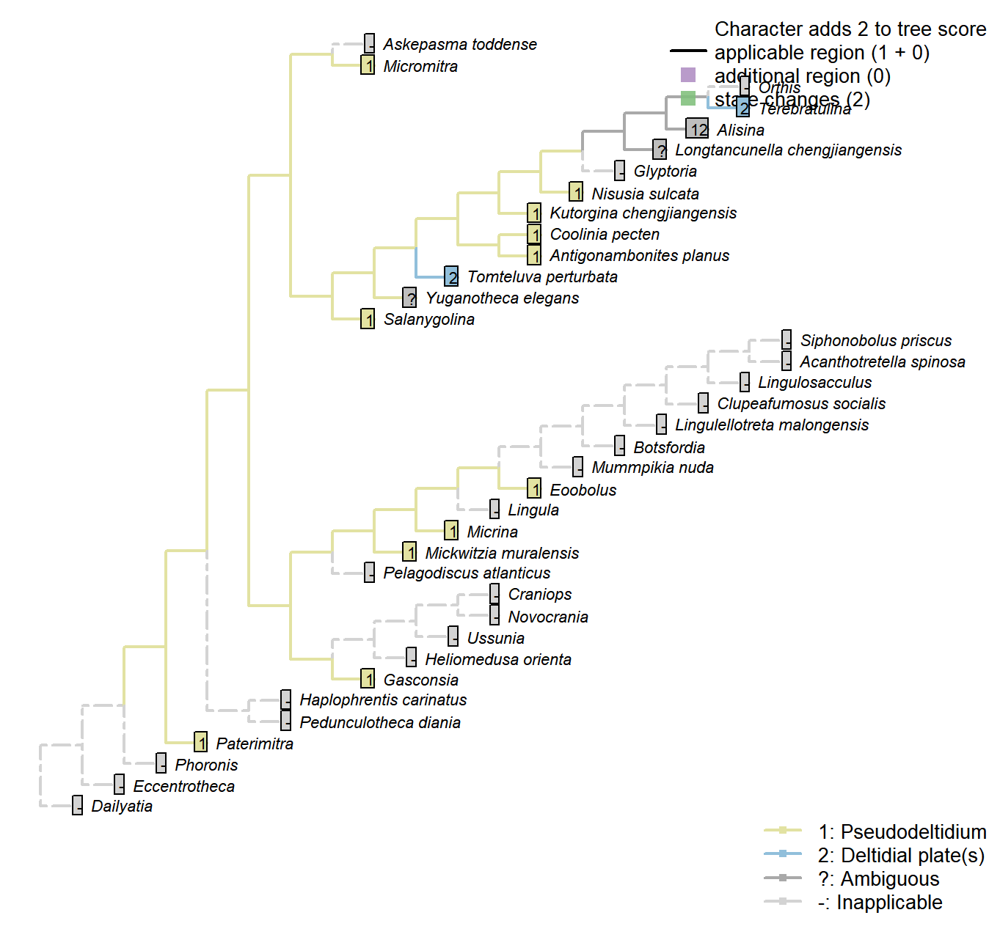
Character 42: Sclerites: Ventral valve: Posterior surface: Delthyrium: Pseudodeltidium: Shape
1: Concave
2: Convex
Transformational character.
A ridge-like (i.e. convex) pseudodeltitium unites Salanygolina with Coolinia and other Chileata (Holmer et al. 20096).
Coded as “Pseudodeltidium: Covered by concave plate” by Bassett et al. (2001).
[43] Posterior surface: Delthyrium: Pseudodeltidium: Hinge furrows
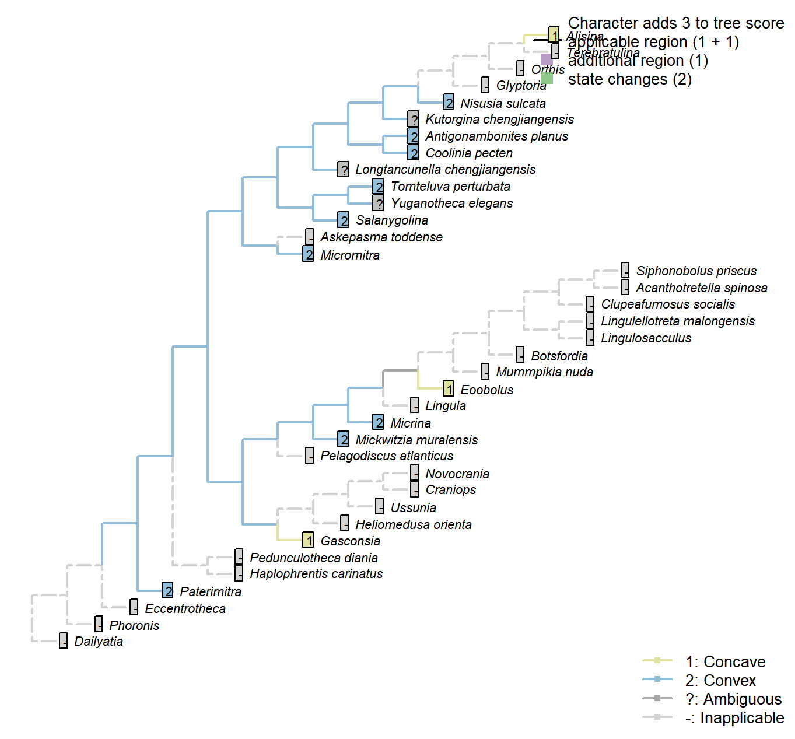
Character 43: Sclerites: Ventral valve: Posterior surface: Delthyrium: Pseudodeltidium: Hinge furrows
0: Absent
1: Present
Neomorphic character.
After Bassett et al. (2001) character 18, “Hinge furrows on lateral sides of pseudodeltidium”.
[44] Umbonal perforation
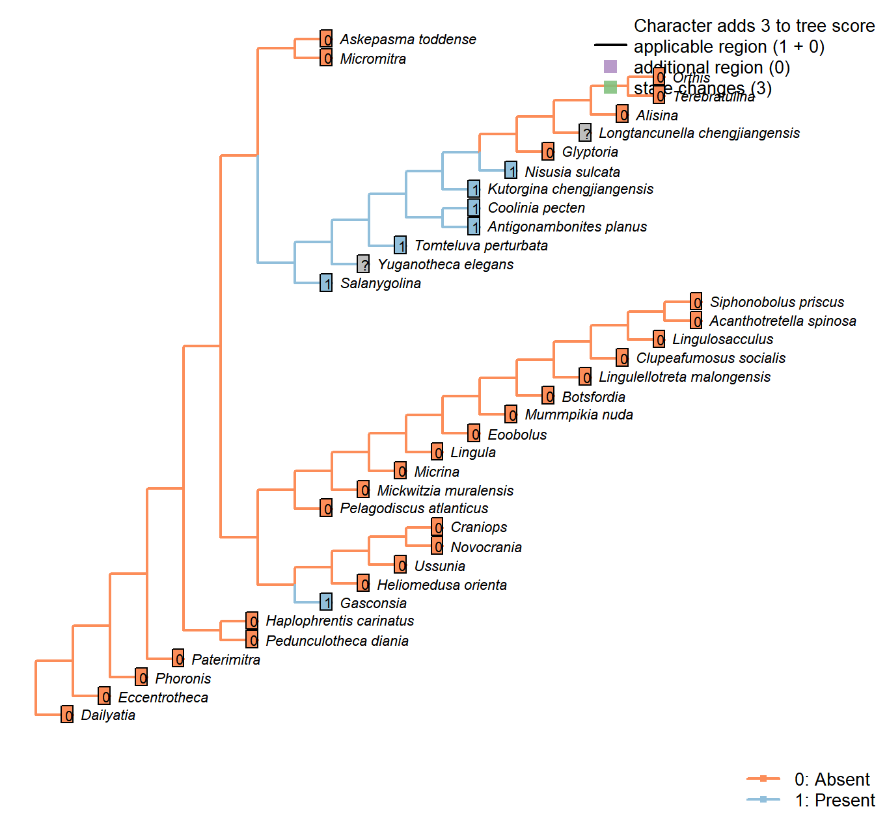
Character 44: Sclerites: Ventral valve: Umbonal perforation
0: Umbo imperforate (or ventral valve absent)
1: Umbonal perforation
Neomorphic character.
Certain taxa, particularly those with a colleplax, exhibit a perforation at the umbo of the ventral valve. This opening is sometimes associated with a pedicle sheath, which emerges from the umbo of the ventral valve without any indication of a relationship with the hinge.
In contrast, the pedicle of acrotretids and similar brachiopods is situated on the larval hinge line, but is later surrounded by the posterolateral regions of the growing shell to become separated from the hinge line, and encapsulated in a position close to (or with resorption of the brephic shell, at) the umbo (see Popov 1992407–411 and fig. 3 for discussion). In some cases, an internal pedicle tube attests to this origin – potentially corresponding to the pedicle groove of lingulids. As such, the pedicle foramen of acrotretids and allies is not originally situated at the umbo; it is instead understood to represent a basally sealed delthyrium.
Dailyatia: The B and C sclerites of Dailyatia bear small umbonal perforations (Skovsted et al. 2015b), but these are not considered to be homologous with the ventral valve, so this character is coded as inapplicable – though the possibility that the perforations are equivalent is intriguing.
A1 sclerites typically have a pair of perforations, which are conceivably equivalent to the setal tubes of Micrina (Holmer et al. 2011). The A1 sclerite of D. bacata has a structure that is arguably similar to the ‘colleplax’ of Paterimitra. But the homology of any of these structures to the umbonal aperture of brachiopods is difficult to establish.illustrated by Chen et al. (2007: Figs. 4, 6, 7) in fact is the mold of a three-dimensionally preserved visceral cavity.” – Zhang et al. (2009).
[45] Umbonal perforation: Shape
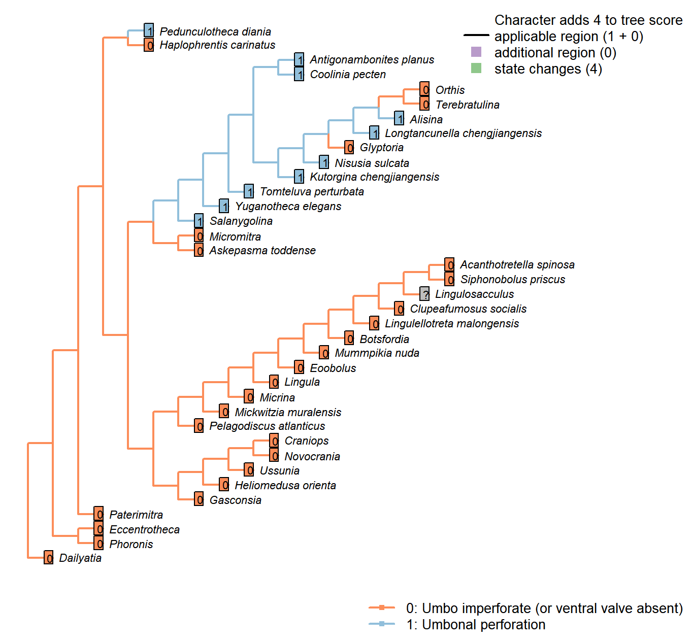
Character 45: Sclerites: Ventral valve: Umbonal perforation: Shape
1: Circular (or subcircular)
2: Rhombic to oval
Transformational character.
[46] Colleplax, cicatrix or pedicle sheath
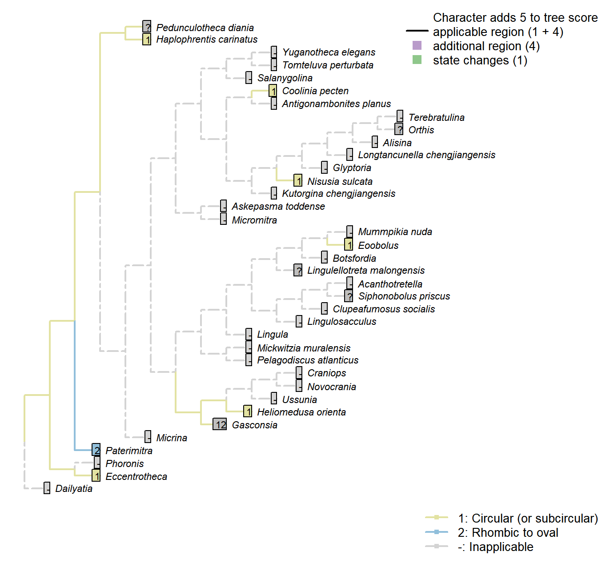
Character 46: Sclerites: Ventral valve: Colleplax, cicatrix or pedicle sheath
0: Absent
1: Present
Neomorphic character.
In certain taxa, the umbo of the ventral valve bears a colleplax, cicatrix or pedicle sheath; Bassett et al. (2008) consider these structures as homologous.
morphologically similar and probably homologous to the adult attachment structure of Siphonobolus.” – Popov et al. (2009).
[47] Median septum
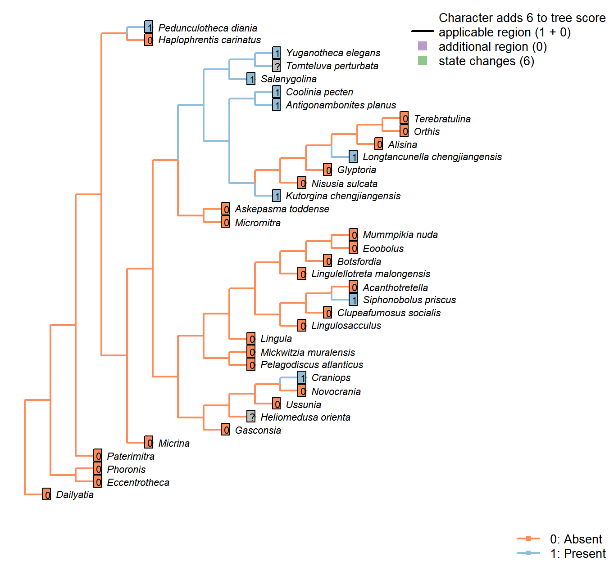
Character 47: Sclerites: Ventral valve: Median septum
0: Absent
1: Present
Neomorphic character.
Chen et al. (2007) observe a median septum in what they interpret as the ventral valve of Heliomedusa, and the ventral valve of Discinisca, which they propose points to a close relationship.
3.4 Sclerites: Ornament
[48] Concentric ornament
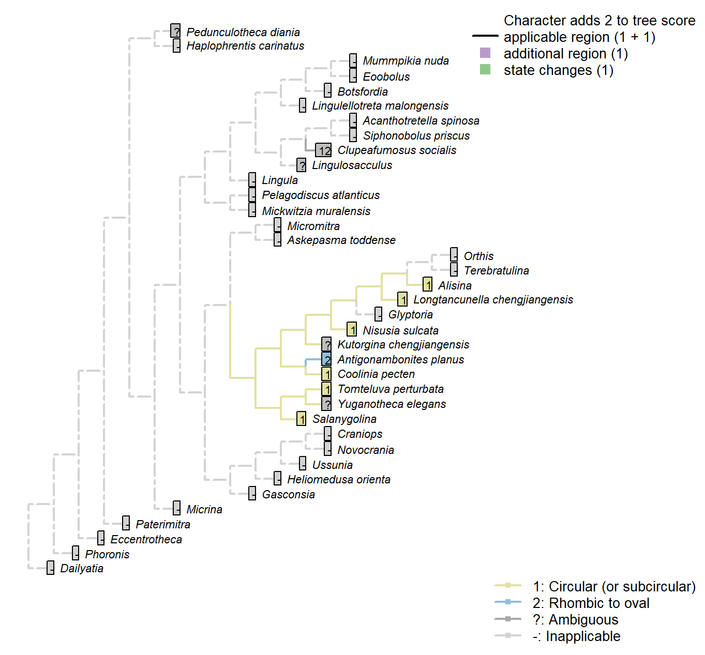
Character 48: Sclerites: Ornament: Concentric ornament
0: Smooth, or growth lines only
1: Concentric ornament present
Neomorphic character.
After character 11 in Williams et al. (1998).
Pustules are arranged along concentric growth lines (Skovsted & Holmer, 2005), so are not treated as a distinct ornamentation.
[49] Concentric ornament: Symmetry
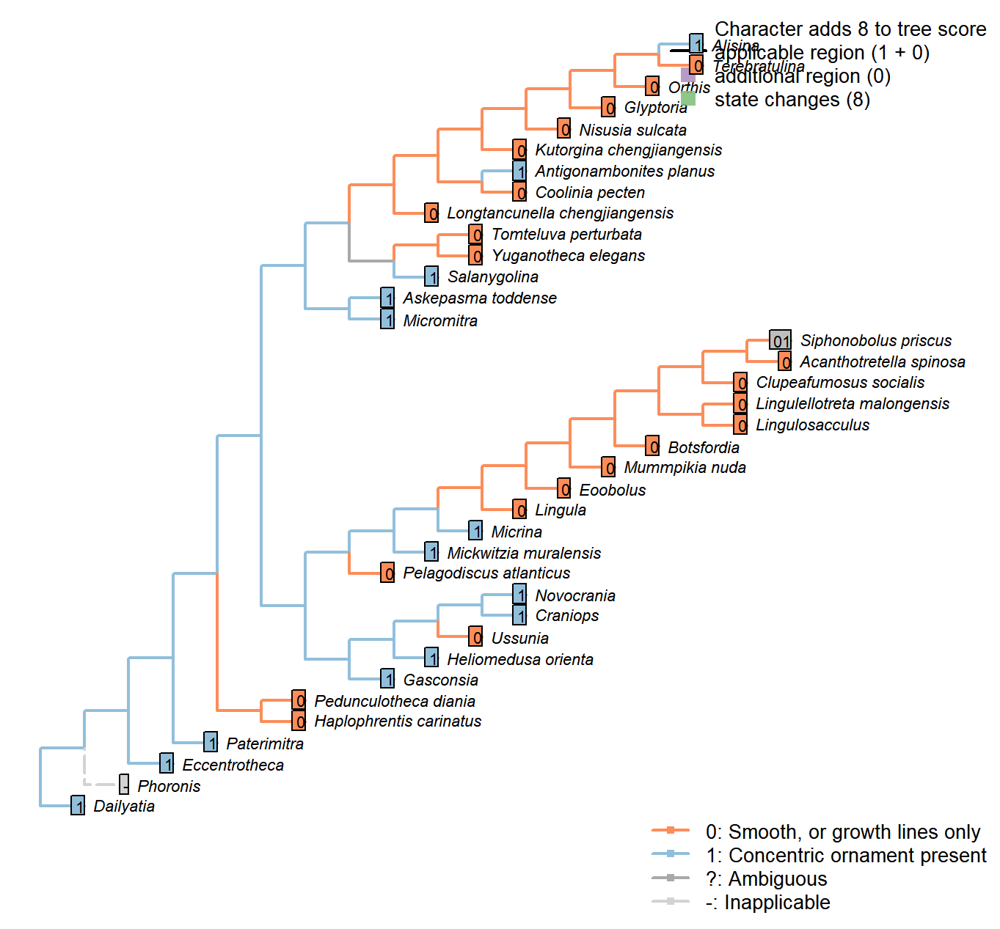
Character 49: Sclerites: Ornament: Concentric ornament: Symmetry
0: Symmetric fila
1: Asymmetric fila, with outer faces
Neomorphic character.
After character 11 in Williams et al. (1998).
[50] Radial ornament
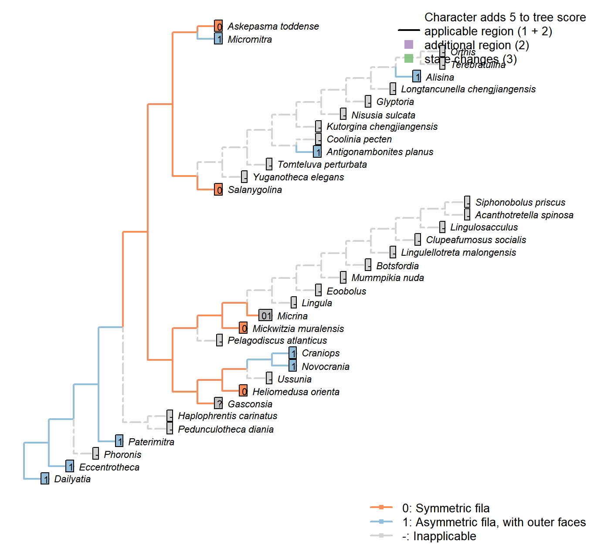
Character 50: Sclerites: Ornament: Radial ornament
0: Absent
1: Present
Neomorphic character.
Ridges radiating from umbo, i.e. ribs.
[51] Shell-penetrating spines
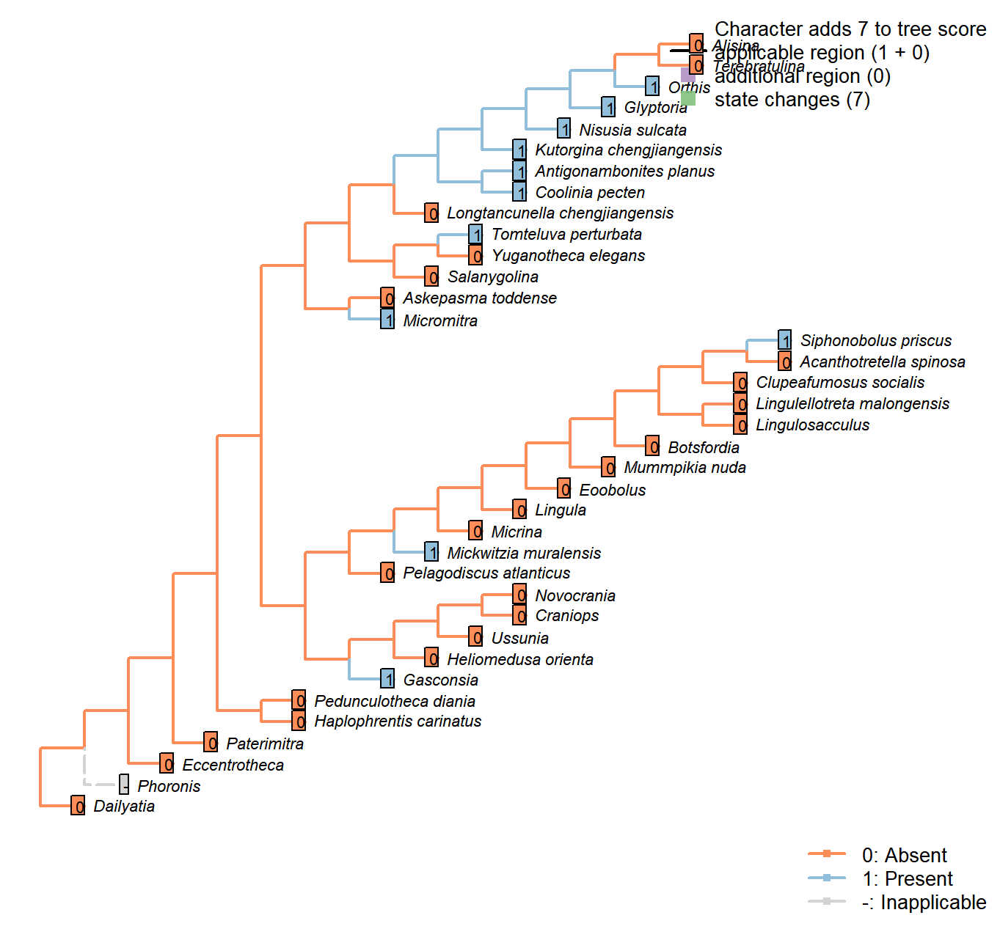
Character 51: Sclerites: Ornament: Shell-penetrating spines
0: Absent
1: Present
Neomorphic character.
Mineralized or partly mineralized spines are observed in Heliomedusa and Acanthotretella.
setae – see pp. 2580–2590 in Williams et al. (2007).
3.5 Sclerites: Composition
[52] Mineralogy
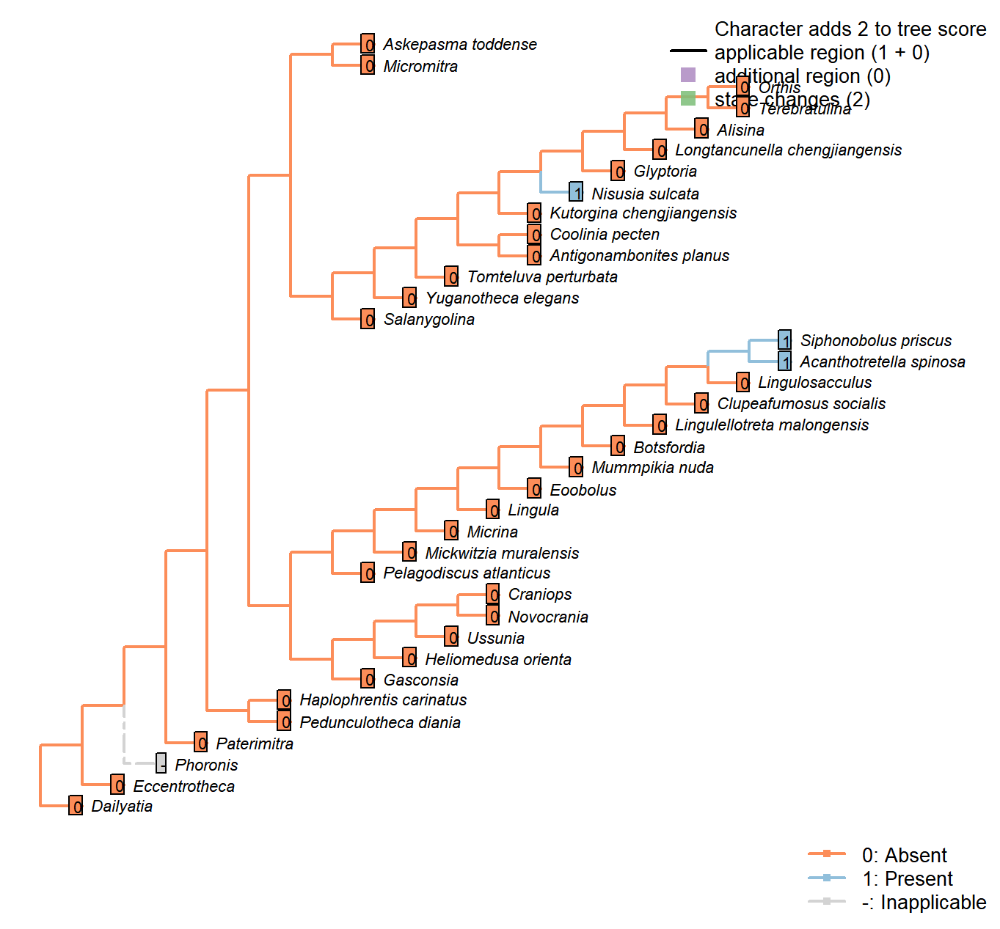
Character 52: Sclerites: Composition: Mineralogy
1: Organic (non-mineralized)
2: Phosphatic
3: Calcitic
4: Aragonitic
Transformational character.
calcitic shells of M. nuda” (Balthasar 2008).
Acanthotretella: Holmer & Caron (2006) note the absence of brittle breakage, interpreted as indicating the absence of a material mineralized component to the shells. The preservation is strikingly different from that of other Burgess Shale brachiopods, ruling out a primarily calcitic or phosphatic composition. The two-dimensional nature of the preservation also differs from that of co-occurring aragonitic taxa (hyoliths; Holmer and Caron 2006273), indicating that any mineralization was minor at best.
Holmer & Caron (2006286) suggest that it is more likely that a (minor) mineral component was present than that it was not, though without providing an uncontestable rationale. To be as conservative as possible, we therefore code this taxon as ambiguous.Cracks within shells of Chengjiang specimens (e.g. Zhang et al. 20073b) demonstrate that the shells were originally mineralized, but not the identity of the original biomineral. This said, phosphatized material from Kazakhstan (Holmer et al. 1997) is attributed to the same species; presuming this phosphate to be original and the material to be conspecific, L. malongensis is coded as having phosphatic shells.
[53] Cuticle or organic matrix
Character 53: Sclerites: Composition: Cuticle or organic matrix
1: GAGs, chitin and collagen
2: Glycoprotein
Transformational character.
Williams et al. (1996) identify glycoprotein-based organic scaffolds as distinct from those comprising glycosaminoglycans (GAGs), chitin and collagen. This character can only be scored for extant taxa.
[54] Incorporation of sedimentary particles
Character 54: Sclerites: Composition: Incorporation of sedimentary particles
0: Absent
1: Present
Neomorphic character.
Phoronids and Yuganotheca aggulutinate particles into their sclerites.
[55] Periostracum: Flexibility
Character 55: Sclerites: Composition: Periostracum: Flexibility
1: Flexible
2: Inflexible
Transformational character.
Following character 9 in Williams et al. (1998); see their p228–230 for a discussion of how this might be inferred from fossil material.
[56] Microstructure: Layers
Character 56: Sclerites: Composition: Microstructure: Layers
1: Single microstructural layer
2: Two microstructurally differentiated layers
3: Inner and outer laminae enclosing medial void
4: Three microstrurally differentiated layers
Transformational character.
Hyolith conchs comprise two mineralized layers of fibrous bundles. Bundles are measure 5–15 μm across; their constituent fibres are each 0.1–1.0 μm wide. In the inner layer, the fibres are transverse; in the outer layer, the bundles are inclined towards the umbo, becoming longitudinal on the outermost margin.
Obolellids comprise a single laminated mineralogical layer (Balthasar 2008). Shell-penetrating canals are not considered as contributing to the mineralogical microstructure and are coded separately.
Coded as non-additive as there is no clear necessity to pass through the brachiopod-like construction: the three layers could arise by the addition of a void to a single pre-existing layer, for example.
Inapplicable in taxa with a non-mineralized shell.
[57] Microstructure: Crystal format
Character 57: Sclerites: Composition: Microstructure: Crystal format
1: Laminated
2: Fibrous bundles
3: Polygonal columns
Transformational character.
Hyolith conchs comprise two mineralized layers of fibrous bundles. Bundles measure 5–15 μm across; their constituent fibres are each 0.1–1.0 μm wide. In the inner layer, the fibres are transverse; in the outer layer, the bundles are inclined towards the umbo, becoming longitudinal on the outermost margin.
Obolellids comprise a single laminated mineralogical layer (Balthasar 2008). Shell-penetrating canals are not considered as contributing to the mineralogical microstructure and are coded separately.
The pervasive (not just superficial) polygonal structures in Paterimitra are distinct, and characterize Askepasma, Salanygolina, Eccentrotheca and Paterimitra (Larsson et al. 2014)
The treatise (Williams et al. 2000) identifies cross-bladed laminae as diagnostic of Strophomenata, with the exception of some older groups that contain fibres or laminar laths.
[58] Microstructure: Punctae
Character 58: Sclerites: Composition: Microstructure: Punctae
0: Absent
1: Present
Neomorphic character.
Punctae are 10–20 μm wide canals created by multicellular extensions of the outer epithelium. They penetrate the full depth of the shell.
Balthasar (2008) writes:
“Vertical shell penetrating structures, such as punctae, pseudopunctae, extropunctae and canals, are common in many groups of brachiopods and are distinguished based on their geometry and size (Williams et al. 1997). Punctae are 10–20 μm wide and represent multicellular extensions of the outer epithelium (Owen and Williams 1969). Pseudopunctae and extropunctae are similar in diameter but, instead of canals, are vertical stacks of conical deflections of individual shell layers (Williams and Brunton 1993). None of these three types of vertical shell structure, all of which are confined to calcitic-shelled brachiopods, compares with the much smaller canals (< 1 μm in diameter) of M. nuda. The only type of vertical structure that fits the size and nature of the canals of the Mural obolellids are the canals of linguliform brachiopods, which range in width from 180 to 740 nm and are occupied by proteinaceous strands in extant taxa (Williams et al. 1992, 1994, 1997). In contrast to obolellid canals, however, linguliform canals are not known to penetrate the entire shell but terminate in organic-rich layers (Williams et al. 1997). Based on these considerations it would, therefore, be misleading to call obolellid shells punctate (they are as much”punctate" as acrotretids or other linguliforms); rather their shell structure should be called canaliculate (Williams et al. 1997)."
[59] Microstructure: Canals
Character 59: Sclerites: Composition: Microstructure: Canals
0: Absent
1: Present
Neomorphic character.
A caniculate microstructure occurs in lingulids; canals are narrower (< 1 μm) than punctae, may branch, and do not fully penetrate the shell, terminating just within the boundaries of a microstructural layer. See Williams et al. (1997), p303ff, and Balthasar (2008), p273, for discussion.
Tubules described in hyoliths by Kouchinsky (2000) measure around 10 μm in diameter, making them an order of magnitude wider than lingulid canals.
This said, Balthasar (2008) considers the tubules within the columnar shell microstructure of Mickwitzia cf. occidens (1–3 μm wide, Skovsted and Holmer 2003), acrotretides (1 μm wide, see Holmer 1989, Zhang et al. (2016)) and lingulellotretids (100 nm wide, Cusack et al. 1999) as equivalent to lingulid canals.
Micrina exhibits both punctae and canals (Harper et al. 2017), challenging Carlson’s contention (in Williams et al. 2007) that the structures are potentially homologous as shell perforations.
Micrina: Acrotretid laminae bear characteristic columns (e.g. Zhang et al. 2016); a similar fabric has been reported, and assumed homologous, in Micrina (Butler et al. 2012).
A similar columnar shell microstructure also occurs in the closely related Mickwitzia (Balthasar 2008).Clupeafumosus socialis: Acrotretid laminae bear characteristic columns (e.g. Zhang et al. 2016).
Balthasar (2008) considers these columns as homologous with tubules within the columnar shell microstructure Mummpikia, Mickwitzia and lingulellotretids.[60] Microstructure: Pseudopunctae
Character 60: Sclerites: Composition: Microstructure: Pseudopunctae
0: Absent
1: Present
Neomorphic character.
Pseudopunctae are not punctae, but deflections of shell laminae. They characterise Strophomenata in particular.
[61] Microstructure: External polygonal ornament
Character 61: Sclerites: Composition: Microstructure: External polygonal ornament
0: Absent
1: Present
Neomorphic character.
Regular polygonal compartments, around 10 μm in diameter, characterise Paterimitra. Walls between compartments have the cross-section of an anvil. An external polygonal structure (possible imprints of epithelial tissue) occurs in Dailyatia, but it is a surface pattern, which is different from the polygonal prisms in the body wall of other paterinid-like groups.
3.6 Offspring: Egg size
[62] Egg size
Character 62: Offspring: Egg size
1: Small: < 100 um, little yolk
2: Large: > 110 um, much yolk
Transformational character.
Following Carlson (1995), character 7. This character is only possible to code in extant taxa. It is not considered independent of Carlson’s character 11, number of gametes released per spawning, as it is possible to produce more small eggs than large eggs – thus this latter character is not reproduced in the present study. The same goes for Carlson’s character 12, gamete dispersal mode; brooders will tend to brood large eggs.
[63] Site of gamete maturation
Character 63: Offspring: Site of gamete maturation
0: Body cavity
1: Mantle canals
Neomorphic character.
After Carlson (1995), character 9. Only possible to code in extant taxa. Mantle canals is considered the derived state, as it represents a migration from the body cavity, where gametes are produced.
[64] Embryonic shell
Character 64: Offspring: Brephic shell: Embryonic shell
0: Absent
1: Present
Neomorphic character.
The embryonic shell or protegulum is secreted by the embryo immediately before hatching.
[65] Morphology
Character 65: Offspring: Brephic shell: Morphology
1: Flat, disc-like (cf. Micrina)
2: Three prominent lobes forming a Y (cf. Paterimitra)
3: Spherical
Transformational character.
The brephic shell is the shell possessed by the young organism (see Ushatinskaya and Korovnikov 2016 and references therein for discussion of terminology).
Micrina resembles linguliforms (Holmer et al. 2011): in both, the brephic mitral shell has one pair of setal sacs enclosed by lateral lobes, whereas the brephic ventral shell has two lateral setal tubes.
Paterimitra and Salanygolina have “identical” ventral brephic shells (Holmer et al. 2011), resembling the shape of a ship’s propeller.
Haplophrentis is coded following typical hyoliths, which have a spherical brephic shell; Pedunculotheca’s, in contrast, is seemingly cap-shaped.
[66] Embryonic shell extended in larvae
Character 66: Offspring: Brephic shell: Embryonic shell extended in larvae
1: Not extended; embryonic shell contiguous with adult shell
2: Extended into larval shell, separated from adult shell by prominent nick
Transformational character.
Many taxa add to their embryonic shell (the protegulum possessed by the embryo upon hatching) during the larval phase of their life cycle. The shell that exists at metamorphosis, marked by a halo or nick point, is variously termed the “first formed shell”, “metamorphic shell” or “larval shell” (Bassett and Popov 2017).
[67] Surface ornament
Character 67: Offspring: Brephic shell: Surface ornament
1: Smooth
2: Rounded pits
3: Polygonal impressions
4: Pustulose
Transformational character.
Pitting of the larval shell characterises acrotretids and their relatives. Pustules occur on Paterinidae. See Character 3 in Williams et al. (2000) tables 5–6.
3.7 Offspring: Larval attachment structure [68]
Character 68: Offspring: Larval attachment structure
0: Without evidence of pedicle
1: With evidence of pedicle
Neomorphic character.
Embryonic shells of Micrina and certain linguliforms exhibit a transversely folded posterior extension that speaks of the original presence of a pedicle in the embryo.
This is independent of the presence of an adult pedicle, which may arise after metamorphosis.
3.8 Setae: Present in adults
[69] Present in adults
Character 69: Setae: Present in adults
0: Absent
1: Present
Neomorphic character.
Although preservation of setae (in adults) is exceptional, their presence can be inferred from shelly material (see Holmer and Caron 2006).
Acanthotretella: Note that the setae do not obviously emerge from tubes, leading Holmer and Caron to question their homology with the setae of other taxa (Heliomedusa, Mickwitzia).
Both valves of Acanthotretella were covered by long spine-like and shell penetrating setae. The setae of A. decaius are usually preserved along anterior and anterolateral margins (Hu et al. 2010).shells of which are also cemented).” – Williams et al. (2007).
[70] Distribution
Character 70: Setae: Distribution
1: Uniform
2: Only present at margins of shell
Transformational character.
Setae penetrate the valves of many brachiopods. In certain taxa, they are apparent only at the margins of the valves, in association with the commissure, being reduced or lost over the surface of the shell.
[71] Present in larva
Character 71: Setae: Embryonic: Present in larva
0: No evidence of setae in embryonic shell
1: Setae present
Neomorphic character.
The protegulum of Micrina is penetrated with canals that were originally associated with setae, a character that it has in common with linguliforms (Holmer et al. 2011).
[72] Setal sacs
Character 72: Setae: Embryonic: Setal sacs
0: Absent
1: Present
Neomorphic character.
Setal sacs are recognizable as raised lumps on the juvenile shell (see Bassett and Popov 2017).
Micrina and linguliforms have setal sacs on their mitral/dorsal embryonic shell, whereas these are absent in Paterimitra (Holmer et al. 2011).
[73] Setal sacs: Number
Character 73: Setae: Embryonic: Setal sacs: Number
1: One pair
2: Two pairs
3: Three pairs
Transformational character.
Two pairs on e.g. Coolina; one on e.g. Micrina.
3.9 Pedicle: NA
[74] Pedicle
Character 74: Pedicle
0: Absent
1: Present
Neomorphic character.
The brachiopod pedicle is a fleshy protuberance that emerges from the posterior part of the body wall – as denoted in fossil taxa by its occurrence between the dorsal and ventral valves.
It is important to distinguish the pedicle from the “pedicle sheath”, a tubular extension of the umbo that grows by accretion from an isolated portion of the ventral mantle. For discussion see Holmer et al. (2018a) and Bassett and Popov (2017).
Acanthotretella: The attachment structure of Acanthotretella originates at the margin of the dorsal and ventral valves; although it emerges from the umbo of the ventral valve, the presence of an internal pedicle tube betrays its identity as a pedicle, rather than a pedicle sheath.
The pedicle of Acanthotretella emerges from a short extension of the umbo of the ventral valve. This extension is contiguous with the valve and presumably grew by accretion; its position and continuity with the valve suggest its interpretation as a pedicle sheath that is superseded as an attachment structure. On the other hand, its continuity with the internal pedicle tube suggests that is may represent an independent organ.the soft seafloor, like most other Chengjiang brachiopods.” …
“The putative pedicle illustrated by Chen et al. (2007: Figs 4, 6, 7) in fact is the mold of a three-dimensionally preserved visceral cavity” – Zhang et al. (2009).
3.10 Pedicle: Constitution
[75] Constitution
Character 75: Pedicle: Constitution
1: Massive or uniform
2: Densely stacked tabular discs
Transformational character.
The pedicle of certain chengjiang rhynchonelliforms comprises “densely stacked, three dimensionally preserved, tabular discs” (Holmer et al. 2018b).
This contrasts with the uniform (‘massive’) pedicles of living taxa.
[76] Biomineralization
Character 76: Pedicle: Biomineralization
1: Absent
2: Present
Transformational character.
The pedicle of strophomenates such as Antigonambonites is biomineralized (Holmer et al. 2018b).
[77] Bulb
Character 77: Pedicle: Bulb
0: Absent
1: Present
Neomorphic character.
A bulb is an expanded region of the distal pedicle, often embedded into the sediment to improve anchorage.
[78] Distal rootlets
Character 78: Pedicle: Distal rootlets
0: Absent
1: Present
Neomorphic character.
Observed in Pedunculotheca and Bethia (Sutton et al. 2005).
[79] Tapering
Character 79: Pedicle: Tapering
1: Uniform thickness
2: Tapering
Transformational character.
Holmer et al. (2018a) remark that the tapering aspect of the Nisusia pedicle recalls that of certain Chengjiang taxa (Alisina, Longtancunella) whilst distinguishing it from many other taxa (Eichwaldia, Bethia) in which the pedicle is a constant thickness.
[80] Coelomic region
Character 80: Pedicle: Coelomic region
1: Absent
2: Present
Transformational character.
Certain brachiopods, such as Acanthotretella, exhibit a coelomic cavity within the pedicle or pedicle sheath.
Treated as transformational as it is not clear that either state is necessarily ancestral.
[81] Surface ornament
Character 81: Pedicle: Surface ornament
1: Smooth
2: Irregular wrinkles
3: Regular annulations
Transformational character.
Annulations are regular rings that surround the pedicle, and are distinguished from wrinkles, which are irregular in magnitude and spacing, and may branch or fail to entirely encircle the pedicle.
[82] Nerve impression
Character 82: Pedicle: Nerve impression
0: Absent
1: Present
Neomorphic character.
In certain taxa the impression of the pedicle nerve is evident in the shell. See character 28 in Williams et al. (1998) appendix 1. Care must be taken not to code an impression as absent when the preservational quality is insufficient to safely infer a genuine absence. Treated as neomorphic as the presence of an innervation is considered a derived state.
3.11 Mantle canals: Morphology
[83] Morphology

Character 83: Mantle canals: Morphology
0: Pinnate (=lemniscate)
1: Bifurcate
2: Baculate
3: Saccate
Neomorphic character.
The morphology of dorsal and ventral canals is identical in all included taxa, so is assumed not to be independent – hence the use of a single character (contra Williams et al. 2000).
For a description of terms see Williams et al. (19972000).
Pinnate = “rapidly branch into a number of subequal, radially disposed canals”
Bifurcate = “vascula lateralia in both valves divide immediately after leaving the body cavity”
Baculate = “extend forward without any major dichotomy or bifurcation” (Williams et al. 1997418)
Saccate = “pouchlike sinuses lying wholly posterior to the arcuate vascula media” (ibid., p412).
[84] vascula lateralia
Character 84: Mantle canals: vascula lateralia
0: Absent
1: Present
Neomorphic character.
We treat the vascula lateralia as equivalent to the vascula genitalia of articulated brachiopods, allowing phylogenetic analysis to test their proposed homology.
Williams et al. (1997) write:
“The mantle canal system of most of the organophosphate-shelled species consists of a single pair of main trunks in the ventral mantle (vascula lateralia) and two pairs in the dorsal mantle, one pair (vascula lateralia) occupying a similar position to the single pair in the ventral mantle and a second pair projecting from the body cavity near the midline of the valve. This latter pair may be termed the vascula media, but whether they are strictly homologous with the vascula media of articulated brachiopods is a matter of
opinion. It is also impossible to assert that the vascula lateralia are the homologues of the vascula myaria or genitalia of articulated species, although they are likely to be so as they arise in a comparable position.”
“In inarticulated brachiopods, two main mantle canals (vascula lateralia) emerge from the main body cavity through muscular valves and bifurcate distally to produce an increasingly dense array of blindly ending branches near the periphery of the mantle (Fig. 71.1–71.2).”
Longtancunella chengjiangensis: Presence is possible but requires interpretation that is not unambiguous:
“In the dorsal valve, there can be seen two baculate grooves that arise from theanterior body wall at an antero-lateral position. These two grooves (Figs 4H, 5D) could be taken to represent the vascula lateralia” – Zhang et al. (2007a).
Williams et al. (2000) write “Holocene craniides have only a single pair of main trunks in both valves, corresponding to the vascula lateralia”
Williams et al. (2007) reiterate this position (p. 2875), at least for the ventral valve.
[85] vascula media
Character 85: Mantle canals: vascula media
0: Absent
1: Present (in dorsal valve)
Neomorphic character.
Williams et al. (1997) note that in addition to the vascula lateralia, “Discinisca has two additional mantle canals emanating from the body cavity into the dorsal mantle (vascula media).”
These structures are only evident in the dorsal valve for the included taxa, so only a single character is necessary.
But in contrast, Williams et al. (2007), p. 2875, identify the dorsal valve’s canals as a vascula media in living cranidds (though both are lateralia in Ordoviian craniides). This character is therefore coded as ambiguous.
[86] vascula terminalia
Character 86: Mantle canals: vascula terminalia
0: Exclusively marginal (peripheral)
1: Directed peripherally and (intero)medially
Neomorphic character.
Presumed to be connected with setal follicles in life (Williams et al. 1998). See Williams et al. (2000) for discussion.
3.12 Feeding: Lophophore
[87] Tentacle disposition
Character 87: Feeding: Lophophore: Tentacle disposition
1: Single side
2: Both sides
Transformational character.
Tentacles may occur along one or both sides of the axis of the lophophore arm (Carlson 1995).
[88] Tentacle rows per side: Trocholophe stage
Character 88: Feeding: Lophophore: Tentacle rows per side: Trocholophe stage
0: Single row
1: Ablabial and adlabial row
Neomorphic character.
After Carlson (1995), character 37. Lophophore tentacles are commonly arranged into an ablabial and adlablial row, with ablabial tentacles sometimes added later in development.
[89] Tentacle rows per side: Post-trocholophe stage
Character 89: Feeding: Lophophore: Tentacle rows per side: Post-trocholophe stage
0: Single row
1: Adbalial and ablabial row
Neomorphic character.
After Carlson (1995), character 37. Lophophore tentacles are commonly arranged into an ablabial and adlablial row, with ablabial tentacles sometimes added later in development.
[90] Median tentacle in early development
Character 90: Feeding: Lophophore: Median tentacle in early development
0: Absent
1: Present
Neomorphic character.
Following character 28 in Carlson (1995). Certain taxa exhibit a median tentacle early in development that is lost at some point in ontogeny.
[91] Forms closed loop
Character 91: Feeding: Lophophore: Forms closed loop
1: Diverging laterally
2: Closed loop
Transformational character.
Whereas the lophophore of crown-group brachiopods typically forms a closed loop, those of Haplophrentis and Heliomedusa diverge laterally (Moysiuk et al. 2017).
[92] Coiling direction
Character 92: Feeding: Lophophore: Coiling direction
1: Anteriad
2: Posteriad
Transformational character.
The lophophore arms of Heliomedusa and Haplophrentis arch posteriad, rather than anteriad as in lingulids. See Zhang et al. (2009); Moysiuk et al. (2017).
[93] Adjustor muscle
Character 93: Feeding: Lophophore: Adjustor muscle
0: Absent
1: Present
Neomorphic character.
Following character 55 in Carlson (1995). Not possible to code in most fossil taxa.
3.13 Feeding: Prominent pharynx [94]
Character 94: Feeding: Prominent pharynx
0: Absent
1: Present
Neomorphic character.
Hyoliths exhibit a prominent protrusible muscular pharynx at the base of the lophophore (Moysiuk et al. 2017). This is considered as potentially equivalent to the anterior projection of the visceral cavity in Heliomedusa, and, by extension, in Lingulosacculus and Lingulotreta.
[95] Anus
Character 95: Feeding: Anus
1: Absent: digestive tract is blind sac
2: Present: through-gut
Transformational character.
The digestive tract may either constitute a blind sac, or a through gut with anus.
[96] Migration
Character 96: Feeding: Anus: Migration
0: Not migrated: straight gut with posterior anus
1: Migrated: anus has migrated posteriad to create U-shaped gut
Neomorphic character.
“The relative position of the mouth and anus in the larvae of brachiopods and phoronids is similar: posterior anus and anterior mouth” – Williams et al. (2007), p. 2884.
p. 2884.
[97] Migration: Within ring of tentacles
Character 97: Feeding: Anus: Migration: Within ring of tentacles
1: Not within ring of tentacles
2: Anterior - within ring of feeding tentacles
Transformational character.
A migrated anus may be located laterally or within the lophophore ring (as in entoprocts).
[98] Migration: Position
Character 98: Feeding: Anus: Migration: Position
1: Left
2: Right
3: Dorsally
4: Ventrally
Transformational character.
If the anus is not within the ring of tentacles, in which direction is it oriented?.
p. 2884.
References
Brazeau, M. D., T. Guillerme, and M. R. Smith. 2017a: Morphological phylogenetic analysis with inapplicable data. BioR\(\chi\)iv.
Holmer, L. E., C. B. Skovsted, G. A. Brock, J. L. Valentine, and J. R. Paterson. 2008: 4:724–728.
Streng, M., A. D. Butler, J. S. Peel, R. J. Garwood, and J.-B. Caron. 2016: A new family of Cambrian rhynchonelliformean brachiopods (Order Naukatida) with an aberrant coral-like morphology. 59:269–293.
Williams, A., S. J. Carlson, C. H. C. Brunton, L. E. Holmer, L. E. Popov, M. Mergl, J. R. Laurie, M. G. Bassett, L. R. M. Cocks, J.-Y. Rong, S. S. Lazarev, R. E. Grant, P. R. Racheboeuf, Y.-G. Jin, B. R. Wardlaw, D. A. T. Harper, and A. D. Wright. 2000: Brachiopoda. Linguliformea, Craniiformea, And Rhynchonelliformea. Vol. 2.1–919 p.
Bassett, M. G., L. E. Popov, and L. E. Holmer. 2001: Functional morphology of articulatory structures and implications for patterns of musculature in Cambrian rhynchonelliform brachiopods.:163–176.
Zhang, Z.-F., L. E. Holmer, Q. Ou, J. Han, and D.-G. Shu. 2011b: 44:490–495.
Williams, A., P. R. Racheboeuf, N. M. Savage, D. E. Lee, L. E. Popov, S. J. Carlson, A. Logan, C. Luter, M. Cusack, G. B. Curry, A. D. Wright, D. A. T. Harper, B. L. Cohen, L. R. M. Cocks, D. I. MacKinnon, T. N. Smirnova, P. G. Baker, J. L. Carter, R. Gourvennec, M. O. Mancenido, C. H. C. Brunton, D.-S. Dong-Li, A. J. Boucot, M. G. Bassett, F. Alvarez, L. E. Holmer, M. Mergl, C. C. Emig, M. Rubel, and J.-R. Jia-Yu. 2007: Part H, Brachiopoda (Revised). 6:2321–3226.
Williams, A., L. E. Popov, L. E. Holmer, and M. Cusack. 1998: The diversity and phylogeny of the paterinate brachiopods. 41:221–262.
Balthasar, U. 2008: Palaeontology 51:263–279.
Holmer, L. E., L. E. Popov, M. G. Pour, T. Claybourn, Z.-L. Zhang, G. A. Brock, and Z.-F. Zhang. 2018b:.
Topper, T. P., D. A. T. Harper, and P. Ahlberg. 2013a: 135:191–203.
Balthasar, U. 2004: 37:381–400.
Benedetto, J. L. 2009: 83:393–405.
Williams, A., M. A. James, C. C. Emig, S. Mackay, M. C. Rhodes, B. L. Cohen, A. B. Gawthrop, L. S. Peck, G. B. Curry, A. D. Ansell, M. Cusack, D. Walton, C. H. C. Brunton, D. I. Mackinnon, and J. R. Richardson. 1997: Brachiopoda. Revised. Introduction. Vol. 1.1–539 p.
Dewing, K. 2001: Hinge modifications and musculature of strophomenoid brachiopods: examples across the Ordovician-Silurian boundary, Anticosti Island, Quebec. 38:125–141.
Topper, T. P., L. E. Holmer, C. B. Skovsted, G. A. Brock, U. Balthasar, C. M. Larsson, P. S. Petterson Stolk, and D. A. T. Harper. 2013b: The oldest brachiopods from the lower Cambrian of South Australia. 58:93–109.
Williams, A., C. H. C. Brunton, and S. J. Carlson. 2006: Rhynchonelliformea (part). 5:1689–2320.
Popov, L. E. 1992: The Cambrian Radiation Of Brachiopods. 399–423 p.
Holmer, L. E., S. P. Stolk, C. B. Skovsted, U. Balthasar, and L. Popov. 2009: 52:1–10.
Holmer, L. E., and J.-B. Caron. 2006: A spinose stem group brachiopod with pedicle from the Middle Cambrian Burgess Shale. 87:273–290.
Holmer, L. E., L. E. Popov, S. P. Koneva, and J.-Y. Rong. 1997: Early Cambrian Lingulellotreta (Lingulata, Brachiopoda) from south Kazakhstan (Malyi Karatau Range) and South China (eastern Yunnan). 71:577–584.
Balthasar, U. 2009: 83:407–417.
Robinson, J. 2014: The muscles, body wall and valve-opening mechanism of extant craniid (inarticulated) brachiopods. 48:1231–1252.
Gorjansky, V. Y., and L. E. Popov. 1986: On the origin and systematic position of the calcareous-shelled inarticulate brachiopods. 19:223–240.
Hanken, N.-M., and D. A. T. Harper. 1985: 28:243–254.
Popov, L. E., M. G. Bassett, L. E. Holmer, and G. M. Ghobadi Pour. 2009: Early ontogeny and soft tissue preservation in siphonotretide brachiopods: new data from the Cambrian-Ordovician of Iran. 16:151–161.
Williams, A., S. J. Carlson, C. H. C. Brunton, L. E. Holmer, and L. E. Popov. 1996: A supra-ordinal classification of the Brachiopoda. 351:1171–1193.
Moysiuk, J., M. R. Smith, and J.-B. Caron. 2017: Hyoliths are Palaeozoic lophophorates. 541:394–397.
Dzik, J. 1980: 102:223–233.
Bassett, M. G., and L. E. Popov. 2017: 50:504–510.
Chen, J.-Y., D.-Y. Huang, and S.-H. Chuang. 2007: 81:38–47.
Zhang, Z.-F., G.-X. Li, L. E. Holmer, G. A. Brock, U. Balthasar, C. B. Skovsted, D.-J. Fu, X.-L. Zhang, H.-Z. Wang, A. D. Butler, Z.-L. Zhang, C.-Q. Cao, J. Han, J.-N. Liu, and D.-G. Shu. 2014: An early Cambrian agglutinated tubular lophophorate with brachiopod characters. 4.
Larsson, C. M., C. B. Skovsted, G. A. Brock, U. Balthasar, T. P. Topper, and L. E. Holmer. 2014: 57:417–446.
Zhang, Z.-F., G.-X. Li, C. C. Emig, J. Han, L. E. Holmer, and D.-G. Shu. 2009: 42:649–661.
Ushatinskaya, G. T. 2016: Protegulum and brephic shell of the earliest organophosphatic brachiopods. 50:141–152.
Zhang, Z.-F., D.-G. Shu, J. Han, and J.-N. Liu. 2004: New data on the lophophore anatomy of Early Cambrian linguloids from the Chengjiang Lagerstätte, Southwest China. 4:1–7.
2007a: 40:11–18.Balthasar, U., and N. J. Butterfield. 2009: Early Cambrian soft-shelled brachiopods as possible stem-group phoronids. 54:307–314.
Skovsted, C. 2005: Early Cambrian brachiopods from north-east Greenland. 48:325–345.
Butler, A. D., M. Streng, L. E. Holmer, and L. E. Babcock. 2015: 89:933–955.
Ushatinskaya, G. T., and I. V. Korovnikov. 2016: Revision of the superfamily Acrotheloidea (Brachiopoda, class Linguliformea, order Lingulida) from the Lower and Middle Cambrian of the Siberian Platform. 50:450–462.
Cooper, G. A. 1976: Lower Cambrian Brachiopods from the Rift Valley (Israel and Jordan). 50:269–289.
Rowell, A. J., and N. E. Caruso. 1985: 59:1227–1242.
Zhang, Z.-F., D.-G. Shu, C. C. Emig, X.-L. Zhang, J. Han, J.-N. Liu, Y. Li, and J.-F. Guo. 2007c: Rhynchonelliformean brachiopods with soft-tissue preservation from the early Cambrian Chengjiang Lagerstätte of South China. 50:1391–1402.
Holmer, L. E., Z. Zhang, T. P. Topper, L. Popov, and T. M. Claybourn. 2018a: The attachment strategies of Cambrian kutorginate brachiopods: the curious case of two pedicle openings and their phylogenetic significance. 92:33–39.
Skovsted, C. B., M. J. Betts, T. P. Topper, and G. A. Brock. 2015b: 48:1–117.
Holmer, L. E., C. B. Skovsted, C. M. Larsson, G. A. Brock, and Z. Zhang. 2011: First record of a bivalved larval shell in Early Cambrian tommotiids and its phylogenetic significance. 54:235–239.
Zhang, Z.-F., L. E. Holmer, L. Popov, and D.-G. Shu. 2011a: An obolellate brachiopod with soft-part preservation from the Early Cambrian Chengjiang fauna of China. 85:460–463.
Bassett, M. G., L. E. Popov, and E. Egerquist. 2008: Early ontogeny of some Ordovician-Silurian strophomenate brachiopods: Significance for interpreting evolutionary relationships within early Rhynchonelliformea. 54:13–20.
Jin, Y.-G., and H.-Y. Wang. 1992: 24:35–49.
Skovsted, C. B., and J. S. Peel. 2010: Early Cambrian brachiopods and other shelly fossils from the basal Kinzers Formation of Pennsylvania. 84:754–762.
Watkins, R. 2002: 76:185–186.
Skovsted, C. B., G. A. Brock, T. P. Topper, J. R. Paterson, and L. E. Holmer. 2011: 54:253–286.
Zhang, Z.-F., J. Han, X.-L. Zhang, J.-N. Liu, J.-F. Guo, and D.-G. Shu. 2007b: 88:65–70.
Balthasar, U., M. Cusack, L. Faryma, P. Chung, L. E. Holmer, J. Jin, I. G. Percival, and L. E. Popov. 2011: Relic aragonite from Ordovician-Silurian brachiopods: Implications for the evolution of calcification. 39:967–970.
Balthasar, U. 2007: An early Cambrian organophosphatic brachiopod with calcitic granules. 50:1319–1325.
Williams, A., L. E. Holmer, and M. Cusack. 2004: Chemico-structure of the organophosphatic shells of siphonotretide brachiopods. 47:1313–1337.
Kouchinsky, A. V. 2000: Skeletal microstructures of hyoliths from the Early Cambrian of Siberia. 24:65–81.
Zhang, Z.-L., Z.-F. Zhang, and H.-Z. Wang. 2016: Epithelial cell moulds preserved in the earliest acrotretid brachiopods from the Cambrian (Series 2) of the Three Gorges area, China. 138:455–466.
Skovsted, C. B., and L. E. Holmer. 2003: 48:1–20.
Moore, J. L., and S. M. Porter. 2018: Plywood-like shell microstructures in hyoliths from the middle Cambrian (Drumian) Gowers Formation, Georgina Basin, Australia..
Owen, G., and A. Williams. 1969: The caecum of articulate Brachiopoda. 172:187–201.
Williams, A., and C. H. C. Brunton. 1993: Role of shell structure in the classification of the orthotetidine brachiopods. 36:931–966.
Williams, A., S. Mackay, and M. Cusack. 1992: 337:83–104.
Williams, A., M. Cusack, and S. Mackay. 1994: 346:223–266.
Holmer, L. E. 1989: Middle Ordovician phosphatic inarticulate brachiopods from Västergötland and Dalarna, Sweden. 26.
Cusack, M., A. Williams, and J. O. Buckman. 1999: Chemico-structural evolution of linguloid brachiopod shells. 42:799–840.
Harper, D. A. T., L. E. Popov, and L. E. Holmer. 2017: Brachiopods: origin and early history. 60:609–631.
Butler, A. D., M. Streng, R. Garwood, T. Lowe, and L. E. Holmer. 2012: 56:61.
Zhang, Z.-L., C. B. Skovsted, and Z.-F. Zhang. 2018: 489:1–14.
Carlson, S. J. 1995: Phylogenetic relationships among extant brachiopods. 11:131–197.
Ruppert, E. E., R. S. Fox, and R. D. Barnes. 2004: 990 p.
Freeman, G., and J. W. Lundelius. 1999: Changes in the timing of mantle formation and larval life history traits in linguliform and craniiform brachiopods. 32:197–217.
Hu, S.-X., Z.-F. Zhang, L. E. Holmer, and C. B. Skovsted. 2010: Soft-part preservation in a linguliform brachiopod from the lower Cambrian Wulongqing Formation (Guanshan Fauna) of Yunnan, South China. 55:495–505.
Sutton, M. D., D. E. G. Briggs, D. J. Siveter, and D. J. Siveter. 2005: Silurian brachiopods with soft-tissue preservation. 436:1013–1015.
Hou, X.-G., D. J. Siveter, D. J. Siveter, R. J. Aldridge, P.-C. Pei-yun, S. E. Gabbott, and M. A. Purnell. 2017: Brachiopoda. p.
Laurie, J. 1987: The musculature and vascular systems of two species of Cambrian Paterinide (Brachiopoda). 10:261–265.
Havlicek, M. 1982: Lingulacea, Paterinacea, and Siphonotretacea (Brachiopoda) in the Lower Ordovician sequence of Bohemia. 25:9–82, pl.1–16.
Emig, C. C. 1992: Functional disposition of the lophophore in living Brachiopoda. 25:291–302.
Zhang, Z.-F., D.-G. Shu, J. Han, and J.-N. Liu. 2004: New data on the lophophore anatomy of Early Cambrian linguloids from the Chengjiang Lagerstätte, Southwest China. 4:1–7.